<meta charset="utf-8">
<title>olways 전시 가이드</title>
<style>
/* Layout: the Figma board itself, scaled to the screen width; each card is a live layer that moves on scroll. */
:root{--dark:#011722;--pri:#1FACF4;--pri-l:#71CBF8;--ink:#14191C;--navh:64px;--k:1;--u:calc(100vw / 1400);color-scheme:light;
  --f-suit:"SUIT","Apple SD Gothic Neo",sans-serif;--f-gsf:"Google Sans Flex","SUIT",sans-serif}
@font-face{font-family:"SUIT";font-weight:100 900;font-display:swap;src:url(fonts/suit.woff2) format("woff2-variations"),url(fonts/suit.woff2) format("woff2")}
@font-face{font-family:"Google Sans Flex";font-weight:1 1000;font-display:swap;src:url(fonts/gsf-latin.woff2) format("woff2");unicode-range:U+0000-00FF,U+2000-206F,U+2191,U+2193,U+2212}
*{box-sizing:border-box}
html{background:var(--dark)}
body{margin:0;background:#F4F5F7;color:var(--ink);font-family:var(--f-suit);-webkit-font-smoothing:antialiased;-webkit-tap-highlight-color:transparent;word-break:keep-all;overflow-x:hidden}
button{font:inherit;color:inherit;background:none;border:0;padding:0;cursor:pointer}
button:focus-visible{outline:2px solid var(--pri);outline-offset:3px;border-radius:12px}
img,video{display:block}

/* ---------- NAV ---------- */
body::before{content:"";position:fixed;inset:0 0 auto;height:env(safe-area-inset-top,0px);z-index:90;background:rgba(244,245,247,.8)}
.nav{position:fixed;z-index:80;top:env(safe-area-inset-top,0px);left:0;right:0;height:var(--navh);display:flex;align-items:center;justify-content:space-between;gap:12px;
  padding-left:max(20px,env(safe-area-inset-left,0px));padding-right:max(20px,env(safe-area-inset-right,0px));pointer-events:none;transition:transform .5s cubic-bezier(.2,.75,.15,1)}
.nav.hide{transform:translateY(-110%)}
.nav > *{pointer-events:auto}
.groups{display:flex;align-items:center;gap:2px;height:44px;padding:4px 6px 4px 14px;border-radius:22px;background:rgba(236,238,241,.8);-webkit-backdrop-filter:saturate(1.6) blur(20px);backdrop-filter:saturate(1.6) blur(20px);box-shadow:inset 0 1px 0 rgba(255,255,255,.8),inset 0 2px 14px rgba(255,255,255,.6),0 6px 24px rgba(3,40,58,.08);transition:background .5s,box-shadow .5s}
.groups .lg{width:62px;color:#03283A;margin-right:10px;display:flex;transition:color .5s}
.groups .lg svg{width:100%;height:auto}
.gl{height:36px;padding:0 13px;border-radius:18px;font-family:var(--f-gsf);font-size:14px;font-weight:500;color:rgba(20,25,28,.5);transition:color .35s,background .35s,box-shadow .35s}
.gl.on{color:var(--ink);background:#fff;box-shadow:inset 0 2px 10px rgba(255,255,255,.9),0 2px 8px rgba(3,40,58,.08)}
.rt{display:flex;align-items:center;gap:8px}
.now{height:44px;padding:0 18px;border-radius:22px;background:#14191C;color:#fff;display:flex;align-items:center;gap:10px;font-family:var(--f-gsf);font-size:14px;font-weight:500;box-shadow:inset 0 2px 14px rgba(255,255,255,.14),0 8px 20px rgba(3,40,58,.18);white-space:nowrap;transition:background .5s,color .5s}
.now i{font-style:normal;opacity:.5;font-size:12px}
.go{position:relative;width:44px;height:44px;border-radius:50%;background:#14191C;color:#fff;display:grid;place-items:center;box-shadow:inset 0 2px 14px rgba(255,255,255,.14),0 8px 20px rgba(3,40,58,.18);transition:background .5s,color .5s,transform .2s}
.go:active{transform:scale(.92)}
.go svg.ar{width:16px;height:16px;transform:rotate(90deg)}
.go svg.ring{position:absolute;inset:3px;width:38px;height:38px;transform:rotate(-90deg)}
.go svg.ring circle{fill:none;stroke:rgba(255,255,255,.9);stroke-width:2;stroke-dasharray:113;stroke-dashoffset:calc(113 - 113 * var(--prog,0));stroke-linecap:round}
body.dk .groups{background:rgba(255,255,255,.1);box-shadow:inset 0 1px 0 rgba(255,255,255,.12),inset 0 2px 14px rgba(255,255,255,.06)}
body.dk .groups .lg{color:#fff}
body.dk .gl{color:rgba(255,255,255,.55)}
body.dk .gl.on{color:var(--dark);background:#fff}
body.dk .now,body.dk .go{background:#fff;color:var(--dark)}
body.dk .go svg.ring circle{stroke:var(--pri)}
body.dk::before{background:rgba(1,23,34,.6)}

/* ---------- BOARD ---------- */
.fs{position:relative;width:100%;overflow:hidden}
.plate{position:absolute;left:0;top:0;width:100%;height:100%}
section:not(#s01cover):not(#s02overview) > .plate{top:-3%;height:106%;object-fit:cover}
.b{position:absolute}
.b > img{width:100%;height:100%}
.b.vid{border-radius:calc(24 / 1400 * 100vw);overflow:hidden;background:#0A2230;box-shadow:0 calc(30/1400*100vw) calc(60/1400*100vw) rgba(3,40,58,.25)}
.b.vid video{width:100%;height:100%;object-fit:cover}
.live{position:absolute;left:1.6%;top:3%;display:flex;align-items:center;gap:6px;padding:4px 10px;border-radius:10px;background:rgba(1,23,34,.55);-webkit-backdrop-filter:blur(8px);backdrop-filter:blur(8px);color:#fff;font-family:var(--f-gsf);font-size:11px;font-weight:600;letter-spacing:.08em}
.live::before{content:"";width:6px;height:6px;border-radius:50%;background:#FF5A4F;animation:blink 1.4s infinite}
@keyframes blink{50%{opacity:.25}}

/* cover */
.cvw{position:absolute;inset:0;overflow:hidden}
.cvw .plate{transform-origin:50% 60%}
/* overview video */
.ovv{position:absolute;inset:-4%;width:108%;height:108%;object-fit:cover;filter:blur(8px) brightness(.42) saturate(.85)}
.ovt{position:absolute;inset:0;background:radial-gradient(90% 80% at 50% 50%,rgba(1,23,34,.35),rgba(1,23,34,.75))}

/* spotlight + badges */
.spot{position:absolute;pointer-events:none;border-radius:calc(24/1400*100vw);background:radial-gradient(circle at var(--sx,50%) var(--sy,50%),rgba(1,23,34,0) 0,rgba(1,23,34,0) calc(70/1400*100vw),rgba(1,23,34,.55) calc(200/1400*100vw));opacity:0;transition:opacity .6s,--sx .9s cubic-bezier(.2,.75,.15,1),--sy .9s cubic-bezier(.2,.75,.15,1)}
.spot.on{opacity:1}
@property --sx{syntax:"<percentage>";inherits:false;initial-value:50%}
@property --sy{syntax:"<percentage>";inherits:false;initial-value:50%}
.bdg{position:absolute;width:calc(56/1400*100vw);height:calc(56/1400*100vw);margin:calc(-28/1400*100vw) 0 0 calc(-28/1400*100vw);border-radius:50%}
.bdg::after{content:"";position:absolute;inset:18%;border-radius:50%;border:2px solid rgba(113,203,248,.9);opacity:0;transform:scale(.6)}
.bdg.on::after{animation:ping 1.6s infinite}
@keyframes ping{0%{opacity:1;transform:scale(.6)}100%{opacity:0;transform:scale(1.9)}}
.cring{position:absolute;pointer-events:none;border-radius:calc(20/1400*100vw);box-shadow:0 0 0 2px rgba(31,172,244,0),0 0 0 rgba(31,172,244,0);transition:box-shadow .5s,transform .5s}
.cring.on{box-shadow:0 0 0 2px #1FACF4,0 calc(14/1400*100vw) calc(30/1400*100vw) rgba(31,172,244,.35);transform:translateY(calc(-6/1400*100vw))}

/* chart marks */
.p{position:absolute;display:block;transform-origin:50% 50%}
.p img{width:100%;height:100%;display:block}
.p.barv{transform-origin:50% 100%}
.p.hero{z-index:2}
.halo{position:absolute;left:21%;top:2%;width:58%;aspect-ratio:1;border-radius:30%;border:3px solid #1FACF4;pointer-events:none}

/* ---------- soap-bubble material (nav + controls) ---------- */
@property --fa{syntax:"<angle>";inherits:false;initial-value:0deg}
@keyframes fa{to{--fa:360deg}}
.bub{position:relative;isolation:isolate;overflow:hidden;
  background:radial-gradient(60% 70% at 20% 12%,rgba(255,255,255,.8),rgba(255,255,255,0) 58%),radial-gradient(110% 90% at 85% 115%,rgba(255,255,255,.4),rgba(255,255,255,0) 60%),linear-gradient(180deg,rgba(255,255,255,.5),rgba(255,255,255,.22));
  -webkit-backdrop-filter:blur(18px) saturate(1.9);backdrop-filter:blur(18px) saturate(1.9);
  box-shadow:inset 0 0 0 1px rgba(255,255,255,.6),inset 0 -8px 16px rgba(255,255,255,.2),inset 0 5px 12px rgba(255,255,255,.4),0 12px 30px rgba(3,40,58,.14)}
.bub::before{content:"";position:absolute;inset:0;border-radius:inherit;padding:1.6px;pointer-events:none;z-index:-1;
  background:conic-gradient(from var(--fa),#ff9de2,#ffe08a,#9cf6ff,#b9a6ff,#8affc1,#ff9de2);
  -webkit-mask:linear-gradient(#000 0 0) content-box,linear-gradient(#000 0 0);-webkit-mask-composite:xor;mask-composite:exclude;opacity:.9;animation:fa 7s linear infinite}
.bub::after{content:"";position:absolute;inset:-30%;pointer-events:none;z-index:-2;opacity:.42;filter:blur(10px);
  background:conic-gradient(from var(--fa) at 62% 68%,rgba(255,157,226,.9),rgba(255,224,138,.8),rgba(156,246,255,.9),rgba(185,166,255,.8),rgba(138,255,193,.7),rgba(255,157,226,.9));
  -webkit-mask:radial-gradient(closest-side,transparent 45%,#000 100%);mask:radial-gradient(closest-side,transparent 45%,#000 100%);animation:fa 11s linear infinite reverse}
body.dk .bub{background:radial-gradient(60% 70% at 20% 12%,rgba(255,255,255,.4),rgba(255,255,255,0) 58%),linear-gradient(180deg,rgba(255,255,255,.16),rgba(255,255,255,.04));
  box-shadow:inset 0 0 0 1px rgba(255,255,255,.3),inset 0 -8px 16px rgba(255,255,255,.08),inset 0 5px 12px rgba(255,255,255,.18),0 12px 30px rgba(0,0,0,.3)}
body.dk .bub::after{opacity:.6}
@keyframes wob{0%{transform:scale(1)}22%{transform:scale(1.07,.9)}45%{transform:scale(.95,1.06)}68%{transform:scale(1.02,.98)}100%{transform:scale(1)}}
.wob{animation:wob .62s cubic-bezier(.3,1.4,.5,1)}
.groups.bub{padding-left:16px}
.groups .gl{position:relative;z-index:1}
.gl.on{background:none!important;box-shadow:none!important}
.gind{position:absolute;top:4px;height:36px;left:0;width:0;border-radius:18px;z-index:0;transition:left .55s cubic-bezier(.34,1.45,.5,1),width .55s cubic-bezier(.34,1.45,.5,1),opacity .3s}
.now.bub{color:var(--ink)} body.dk .now.bub{color:#fff}
.go.bub{color:var(--ink)} body.dk .go.bub{color:#fff}
.go.bub svg.ring circle{stroke:var(--pri)}

/* ---------- hand-built sections ---------- */
.hx{position:relative;width:100%}
.hx .hdr{width:100%;display:block}
.hx .wrap{padding:0 calc(var(--u)*40) calc(var(--u)*110)}
.gsf{font-family:var(--f-gsf)}

/* interview */
.iv{background:linear-gradient(180deg,#F4F5F7,#ECF8FE)}
.iv .wrap{display:flex;flex-direction:column;gap:calc(var(--u)*96);padding-top:calc(var(--u)*48)}
.gg{display:flex;flex-direction:column;gap:calc(var(--u)*72)}
.ig{display:flex;flex-direction:column;gap:calc(var(--u)*24)}
.ih{display:flex;flex-direction:column;gap:calc(var(--u)*8);align-items:flex-start}
.vt{font-family:var(--f-gsf);font-weight:700;font-size:calc(var(--u)*12);line-height:1.5;padding:calc(var(--u)*4) calc(var(--u)*10);border-radius:calc(var(--u)*8)}
.v1{background:rgba(113,203,248,.2);color:#0B97DE}.v2{background:rgba(226,202,6,.16);color:#8F8004}.v3{background:rgba(9,123,181,.12);color:#097BB5}
.ih h3{margin:0;font-weight:700;font-size:calc(var(--u)*24);line-height:1.4;letter-spacing:-.02em;color:#14191C}
.gen{margin:0;font-family:var(--f-gsf);font-size:calc(var(--u)*12);line-height:1.5;color:rgba(20,25,28,.45)}
.row{display:flex;gap:calc(var(--u)*20);align-items:stretch}
.cbox{margin:0;flex:none;width:calc(var(--u)*709);background:#fff;border-radius:calc(var(--u)*24);padding:calc(var(--u)*20) calc(var(--u)*24);display:flex;flex-direction:column;justify-content:space-between;position:relative;overflow:hidden}
.qh{display:flex;gap:calc(var(--u)*12);align-items:flex-start}
.qq{flex:none;width:calc(var(--u)*26);height:calc(var(--u)*26);border-radius:calc(var(--u)*13);background:#14191C;color:#fff;display:grid;place-items:center;font-family:var(--f-gsf);font-weight:700;font-size:calc(var(--u)*12)}
.qe{margin:0;font-family:var(--f-gsf);font-weight:500;font-size:calc(var(--u)*16);line-height:1.35;color:#14191C}
.qk{margin:0;font-size:calc(var(--u)*12);line-height:1.5;color:rgba(20,25,28,.55)}
.ca{position:relative;flex:none}
.pc{position:absolute;display:block}
.pc img{width:100%;height:100%;display:block}
.qcard{flex:1;min-width:0;background:#fff;border-radius:calc(var(--u)*24);padding:calc(var(--u)*24) calc(var(--u)*28);display:flex;flex-direction:column;gap:calc(var(--u)*16)}
.qm{display:block;font-weight:900;font-size:calc(var(--u)*70);line-height:1;height:calc(var(--u)*33);overflow:visible;color:#9ADAFA;font-family:"Gothic A1","SUIT",sans-serif}
.qt{display:flex;flex-direction:column;gap:calc(var(--u)*8);align-items:flex-start}
.who{font-weight:700;font-size:calc(var(--u)*10);line-height:1.5;color:#097BB5;background:rgba(9,123,181,.1);padding:calc(var(--u)*4) calc(var(--u)*8);border-radius:calc(var(--u)*30)}
.qt .ko{margin:0;font-weight:500;font-size:calc(var(--u)*15);line-height:1.6;color:rgba(20,25,28,.9)}
.qt .ko b{color:#1E6FD9;font-weight:700}
.qt .en{margin:0;font-family:var(--f-gsf);font-size:calc(var(--u)*12);line-height:1.45;color:rgba(20,25,28,.45)}
.dv{height:1px;background:rgba(20,25,28,.08);flex:none}
.ban{border-radius:calc(var(--u)*24);padding:calc(var(--u)*24) calc(var(--u)*32);text-align:center;color:#fff;background:linear-gradient(174deg,#2A2F35,#5A6068 71%);box-shadow:inset 0 0 calc(var(--u)*30) rgba(255,255,255,.3)}
.bk{margin:0;font-family:var(--f-gsf);font-weight:500;font-size:calc(var(--u)*16);line-height:1.5;color:rgba(255,255,255,.6)}
.bt{margin:calc(var(--u)*4) 0;font-weight:700;font-size:calc(var(--u)*20);line-height:1.5}
.be{margin:0;font-family:var(--f-gsf);font-size:calc(var(--u)*20);line-height:1.5;color:rgba(255,255,255,.55)}

/* hypothesis */
.hy{background:#011722}
.hy .wrap{display:flex;flex-direction:column;gap:calc(var(--u)*40);padding-top:calc(var(--u)*36)}
.hgrid{display:grid;grid-template-columns:calc(var(--u)*340) calc(var(--u)*40) calc(var(--u)*400) calc(var(--u)*40) 1fr;row-gap:calc(var(--u)*14);align-items:stretch}
.har{display:grid;place-items:center;font-family:var(--f-suit);font-weight:700;font-size:calc(var(--u)*20);color:#71CBF8}
.hs{height:calc(var(--u)*55);border-radius:calc(var(--u)*24);padding:0 calc(var(--u)*24);display:flex;align-items:center;gap:calc(var(--u)*20);box-shadow:0 calc(var(--u)*12) calc(var(--u)*30) rgba(9,123,181,.35),inset 0 calc(var(--u)*2) calc(var(--u)*20) rgba(255,255,255,.2)}
.hs b{font-family:var(--f-gsf);font-weight:900;font-size:calc(var(--u)*14);color:#71CBF8}
.hs span{display:flex;flex-direction:column;font-weight:700;font-size:calc(var(--u)*14);line-height:1.5;color:#fff}
.hs i{font-style:normal;font-family:var(--f-gsf);font-weight:400;font-size:calc(var(--u)*10);color:rgba(255,255,255,.55)}
.s1{background:linear-gradient(171deg,#0E232D,#011722 71%)}
.s2{background:linear-gradient(172deg,#394D57,#03283A 71%)}
.s3{background:linear-gradient(174deg,#1FACF4,#03283A 71%);box-shadow:0 calc(var(--u)*12) calc(var(--u)*30) rgba(9,123,181,.35),inset 0 calc(var(--u)*2) calc(var(--u)*20) rgba(255,255,255,.4)}
.s3 b{color:#fff}
.hc{border-radius:calc(var(--u)*18);padding:calc(var(--u)*16) calc(var(--u)*18);display:flex;flex-direction:column;gap:calc(var(--u)*8)}
.c0{background:rgba(255,255,255,.05);border:1px solid rgba(255,255,255,.12)}
.hk{margin:0;display:flex;gap:calc(var(--u)*8);align-items:center;font-weight:700;font-size:calc(var(--u)*12);line-height:1.5;color:rgba(255,255,255,.6)}
.hk b{font-family:var(--f-gsf);font-weight:900;font-size:calc(var(--u)*16);color:#71CBF8}
.c0 p:last-child{margin:0;font-size:calc(var(--u)*14);line-height:1.55;color:rgba(255,255,255,.75)}
.c2{align-items:flex-start;border-radius:0 calc(var(--u)*20) calc(var(--u)*20) calc(var(--u)*20);background:rgba(122,136,144,.36);box-shadow:inset 0 1px 0 rgba(255,255,255,.06)}
.who.d{display:inline-flex;align-items:center;gap:calc(var(--u)*4)}
.who.d::before{content:"D";width:calc(var(--u)*16);height:calc(var(--u)*16);border-radius:calc(var(--u)*8);background:#B6B8B9;color:#fff;font-family:var(--f-gsf);font-size:calc(var(--u)*6);display:grid;place-items:center;box-shadow:inset 0 calc(var(--u)*1) calc(var(--u)*4) rgba(255,255,255,.5)}
.c2 .who.d{background:#273941;color:rgba(255,255,255,.8)}
.c2 .ko{margin:0;font-weight:500;font-size:calc(var(--u)*13);line-height:1.6;color:rgba(255,255,255,.85)}
.c2 .ko b{font-weight:900;color:#71CBF8}
.c2 .en{margin:0;font-family:var(--f-gsf);font-size:calc(var(--u)*12);line-height:1.45;color:rgba(255,255,255,.55)}
.c4{gap:calc(var(--u)*4);background:linear-gradient(164deg,#71CBF8,#1FACF4 39%,#0B97DE 71%);box-shadow:0 calc(var(--u)*10) calc(var(--u)*28) rgba(31,172,244,.3),inset 0 calc(var(--u)*2) calc(var(--u)*18) rgba(255,255,255,.5)}
.hk2{margin:0;font-family:var(--f-gsf);font-weight:700;font-size:calc(var(--u)*10);line-height:1.5;color:rgba(255,255,255,.75)}
.c4 p:last-child{margin:0;font-weight:700;font-size:calc(var(--u)*14);line-height:1.55;color:#fff}
.hfin{background:rgba(113,203,248,.4);border:calc(var(--u)*3) solid rgba(113,203,248,.5);border-radius:calc(var(--u)*22);padding:calc(var(--u)*20) calc(var(--u)*28);text-align:center}
.fk{margin:0;font-family:var(--f-gsf);font-weight:700;font-size:calc(var(--u)*12);line-height:1.5;color:#71CBF8}
.ft{margin:calc(var(--u)*6) 0;font-weight:700;font-size:calc(var(--u)*24);line-height:1.5;color:#fff}
.fe{margin:0;font-family:var(--f-gsf);font-size:calc(var(--u)*12);line-height:1.5;color:rgba(255,255,255,.5)}

/* solution */
.so{background:linear-gradient(180deg,#001622 0%,#03314A 55%,#065E8A 100%)}
.so .wrap{padding-top:calc(var(--u)*44);padding-bottom:calc(var(--u)*120)}
.srow{display:flex;gap:calc(var(--u)*16)}
.scard{flex:1;min-width:0;border-radius:calc(var(--u)*24);padding:calc(var(--u)*28) calc(var(--u)*32) calc(var(--u)*30);color:#fff;display:flex;flex-direction:column;gap:calc(var(--u)*6);
  background:linear-gradient(160deg,rgba(255,255,255,.12),rgba(255,255,255,.04));box-shadow:inset 0 1px 0 rgba(255,255,255,.18),inset 0 2px 30px rgba(255,255,255,.06),0 calc(var(--u)*20) calc(var(--u)*40) rgba(0,10,20,.25);-webkit-backdrop-filter:blur(20px);backdrop-filter:blur(20px)}
.sh{display:flex;align-items:baseline;gap:calc(var(--u)*10)}
.sh b{font-size:calc(var(--u)*22);font-weight:700}
.sh span{font-family:var(--f-gsf);font-size:calc(var(--u)*14);color:rgba(255,255,255,.5)}
.st{margin:calc(var(--u)*14) 0 0;font-size:calc(var(--u)*24);font-weight:700;line-height:1.5;letter-spacing:-.01em}
.se{margin:0;font-family:var(--f-gsf);font-size:calc(var(--u)*13);line-height:1.5;color:rgba(255,255,255,.45)}
.lanes{margin-top:calc(var(--u)*30);display:flex;flex-direction:column;gap:calc(var(--u)*14);padding-top:calc(var(--u)*24);border-top:1px dashed rgba(255,255,255,.16)}
.lane{display:flex;align-items:center;gap:calc(var(--u)*8);height:calc(var(--u)*50)}
.lane .k{flex:none;width:calc(var(--u)*72);font-family:var(--f-gsf);font-weight:700;font-size:calc(var(--u)*12);letter-spacing:.08em;color:#F5D547}
.lane.lo .k{color:var(--pri-l)}
.seg{position:relative;flex:none;height:calc(var(--u)*46);border-radius:calc(var(--u)*14);display:flex;align-items:center;justify-content:center;padding:0 calc(var(--u)*8);font-weight:700;font-size:calc(var(--u)*14);white-space:nowrap;overflow:hidden}
.seg::after{content:"";position:absolute;inset:0;border-radius:inherit;box-shadow:inset 0 2px 12px rgba(255,255,255,.22);pointer-events:none}
.seg.gy{background:repeating-linear-gradient(-45deg,rgba(255,255,255,.08) 0 8px,rgba(255,255,255,.04) 8px 16px);color:rgba(255,255,255,.62)}
.seg.bad{background:linear-gradient(135deg,rgba(246,176,158,.45),rgba(239,112,79,.55));color:#fff}
.seg.bl{background:linear-gradient(164deg,#71CBF8,#1FACF4 39%,#0B97DE 71%);color:#fff}
.seg.bl::after{box-shadow:inset 0 2px 14px rgba(255,255,255,.55)}
.seg.gd{background:rgba(110,220,110,.2);color:#B6F0B4}
.mk{flex:none;width:calc(var(--u)*30);height:calc(var(--u)*30);border-radius:50%;display:grid;place-items:center;font-weight:800;font-size:calc(var(--u)*15);color:#fff;margin-left:calc(var(--u)*4)}
.mk.x{background:linear-gradient(135deg,#F6B09E,#EF704F 40%,#EB4F27);box-shadow:0 0 16px rgba(239,112,79,.6)}
.mk.o{background:linear-gradient(135deg,#9ADAFA,#1FACF4);box-shadow:0 0 16px rgba(31,172,244,.6)}
.lane em{font-style:normal;font-weight:700;font-size:calc(var(--u)*14);white-space:nowrap}
.lane em.r{color:#FF9C80}.lane em.g{color:#9ADAFA}

/* usability test */
.ut{background:linear-gradient(180deg,#011722 0%,#022A3E 22%,#04446A 62%,#075F8C 100%)}
.ut .wrap{display:flex;flex-direction:column;gap:calc(var(--u)*180);padding-top:calc(var(--u)*40);padding-bottom:calc(var(--u)*180)}
.ui{display:flex;flex-direction:column;gap:calc(var(--u)*56)}
.up{margin:0;display:flex;align-items:center;gap:calc(var(--u)*12);font-size:calc(var(--u)*16);line-height:1.5;color:rgba(255,255,255,.75)}
.un{flex:none;width:calc(var(--u)*30);height:calc(var(--u)*30);border-radius:calc(var(--u)*8);background:linear-gradient(135deg,#9ADAFA,#1FACF4);color:#fff;display:grid;place-items:center;font-family:var(--f-gsf);font-weight:700;font-size:calc(var(--u)*16);box-shadow:inset 0 calc(var(--u)*2) calc(var(--u)*8) rgba(255,255,255,.5)}
.uh h3{margin:calc(var(--u)*18) 0 0;font-weight:700;font-size:calc(var(--u)*40);line-height:1.35;letter-spacing:-.02em;color:#fff}
.upin{height:100svh;display:flex;flex-direction:column;align-items:center;justify-content:center;gap:20px;padding-top:30px}
.stage{position:relative;width:min(calc(var(--u)*1320),calc((100svh - 160px) * 16 / 9));aspect-ratio:16/9;border-radius:calc(var(--u)*32);overflow:hidden;background:#021C29;box-shadow:0 calc(var(--u)*40) calc(var(--u)*90) rgba(0,8,16,.5)}
.vv{position:absolute;inset:0;opacity:0;transform:scale(1.05);filter:saturate(.6) brightness(.8);transition:opacity .55s ease,transform 1s cubic-bezier(.2,.8,.2,1),filter .7s}
.vv.on{opacity:1;transform:scale(1);filter:none}
.vv img{width:100%;height:100%;object-fit:cover}
.vv.tobe::after{content:"";position:absolute;inset:0;border-radius:inherit;box-shadow:inset 0 0 0 3px rgba(154,218,250,.85);pointer-events:none}
.vl{position:absolute;left:20px;top:18px;padding:6px 14px;border-radius:999px;font-family:var(--f-gsf);font-weight:700;font-size:14px;color:#fff;background:rgba(20,25,28,.55);-webkit-backdrop-filter:blur(10px);backdrop-filter:blur(10px)}
.vv.tobe .vl{background:#fff;color:#14191C}
.zc{position:absolute;right:18px;bottom:18px;width:33%;border-radius:20px;padding:10px;background:rgba(1,23,34,.62);-webkit-backdrop-filter:blur(16px);backdrop-filter:blur(16px);box-shadow:inset 0 0 0 1.5px rgba(239,112,79,.6),0 20px 40px rgba(0,0,0,.35);
  opacity:0;transform:translateY(18px) scale(.96);transition:opacity .5s .45s,transform .7s .45s cubic-bezier(.2,.9,.2,1)}
.vv.on .zc{opacity:1;transform:none}
.zc.ok{box-shadow:inset 0 0 0 1.5px rgba(154,218,250,.7),0 20px 40px rgba(0,0,0,.35)}
.zc img{width:100%;border-radius:12px}
.zc ul{list-style:none;margin:8px 0 0;padding:0;display:flex;flex-direction:column;gap:4px}
.zc li{display:flex;gap:8px;align-items:center;padding:6px 10px;border-radius:10px;background:rgba(239,112,79,.18);color:#fff;font-weight:700;font-size:12px}
.zc li::before{content:"";flex:none;width:8px;height:8px;border-radius:50%;background:#EF704F}
.zc.ok li{background:#097BB5}.zc.ok li::before{background:#9ADAFA}
.seg3{display:flex;gap:2px;padding:5px;border-radius:999px;flex:none}
.sb{position:relative;z-index:1;height:40px;padding:0 20px;border-radius:999px;font-family:var(--f-gsf);font-weight:700;font-size:14px;color:rgba(255,255,255,.55);transition:color .4s}
.sb.on{color:#fff}
.sb.tb.on{color:#fff;text-shadow:0 0 12px rgba(113,203,248,.9)}
.seg3 .ind{position:absolute;top:5px;height:40px;left:5px;width:0;border-radius:999px;z-index:0;transition:left .55s cubic-bezier(.34,1.45,.5,1),width .55s cubic-bezier(.34,1.45,.5,1)}
.why{display:grid;grid-template-columns:calc(var(--u)*400) 1fr;gap:calc(var(--u)*48);align-items:center;padding:calc(var(--u)*28) calc(var(--u)*36);border-radius:calc(var(--u)*24);background:linear-gradient(160deg,rgba(255,255,255,.1),rgba(255,255,255,.03));box-shadow:inset 0 1px 0 rgba(255,255,255,.15)}
.wd{display:grid;grid-template-columns:1fr calc(var(--u)*40) 1fr;align-items:center;row-gap:calc(var(--u)*10)}
.wm{height:calc(var(--u)*88);border-radius:calc(var(--u)*14);border:1px solid rgba(255,255,255,.15);background:rgba(255,255,255,.04);display:flex;align-items:center;padding:0 calc(var(--u)*14)}
.wm.r{justify-content:flex-end}
.wm i{width:calc(var(--u)*50);height:calc(var(--u)*56);border-radius:calc(var(--u)*10);display:grid;place-items:center;font-style:normal;color:#fff;font-size:calc(var(--u)*18)}
.wm i.x{background:linear-gradient(135deg,#F6B09E,#EF704F)}.wm i.o{background:linear-gradient(135deg,#9ADAFA,#1FACF4)}
.wa{text-align:center;color:#71CBF8;font-size:calc(var(--u)*18)}
.wl{display:contents;font-size:calc(var(--u)*12);font-weight:700}.wl span{text-align:center;font-size:calc(var(--u)*12);font-weight:700}.wl .r{grid-column:1}.wl .b{grid-column:3}
.wl .r{color:#FF9C80}.wl .b{color:#71CBF8}
.wk{margin:0;color:#71CBF8;font-size:calc(var(--u)*13);font-weight:700}
.wt{margin:calc(var(--u)*8) 0;color:#fff;font-size:calc(var(--u)*16);line-height:1.65;font-weight:600}
.we{margin:0;color:rgba(255,255,255,.5);font-family:var(--f-gsf);font-size:calc(var(--u)*12);line-height:1.5}
.ups{display:grid;grid-template-columns:1fr 1fr;border-radius:calc(var(--u)*24);padding:calc(var(--u)*28) calc(var(--u)*36);background:rgba(255,255,255,.08);box-shadow:inset 0 1px 0 rgba(255,255,255,.12)}
.ups > div{padding-right:calc(var(--u)*36)}
.ups > div + div{padding:0 0 0 calc(var(--u)*36);border-left:1px solid rgba(255,255,255,.1)}
.pk,.sk{margin:0 0 calc(var(--u)*10);font-weight:700;font-size:calc(var(--u)*14)}
.pk{color:#FF8A6B}.sk{color:#71CBF8}
.ups p:last-child{margin:0;color:rgba(255,255,255,.72);font-size:calc(var(--u)*17);line-height:1.6}
.ups .sv{color:#fff;font-weight:700}
.uqs{display:grid;grid-template-columns:1fr 1fr;gap:calc(var(--u)*16)}
.uq{border-radius:calc(var(--u)*20);padding:calc(var(--u)*22) calc(var(--u)*26);background:rgba(255,255,255,.06);box-shadow:inset 0 1px 0 rgba(255,255,255,.1);display:flex;flex-direction:column;gap:calc(var(--u)*8);align-items:flex-start}
.ut .who.d{background:rgba(1,23,34,.45);color:#9ADAFA}
.ut .who.d::before{background:linear-gradient(135deg,#9ADAFA,#1FACF4)}
.uq .ko{margin:0;color:#fff;font-size:calc(var(--u)*16);line-height:1.6;font-weight:500}
.uq .en{margin:0;color:rgba(255,255,255,.5);font-family:var(--f-gsf);font-size:calc(var(--u)*12);line-height:1.5}

/* through the lens */
.ln{background:#F3F5F8}
.lhead{position:relative;width:100%}
.lfull{position:relative}
.lstick{position:sticky;top:0;height:100svh;display:grid;place-items:center;background:#05141C;overflow:hidden}
.lv{position:relative;width:min(100vw,calc(100svh * 1440 / 1006));aspect-ratio:1440/1006;overflow:hidden;will-change:transform}
.lv video,.hv video{width:100%;height:100%;object-fit:contain;background:#0A2230}
.lv .live{left:20px;top:20px;font-size:12px}
.lsheet{position:relative;z-index:2;background:#F3F5F8;border-radius:calc(var(--u)*40) calc(var(--u)*40) 0 0;padding:calc(var(--u)*52) calc(var(--u)*40) calc(var(--u)*90);box-shadow:0 -30px 60px rgba(0,10,20,.3)}
.lcap img{display:block;max-width:100%;height:auto}
.hwrap{position:relative;height:100svh;overflow:hidden;background:#F3F5F8;display:flex;flex-direction:column;justify-content:center}
.htrack{display:flex;gap:calc(var(--u)*32);padding:0 calc(var(--u)*40);width:max-content;will-change:transform}
.hp{flex:none;width:min(calc(100vw - calc(var(--u)*80) - 80px),calc((100svh - 250px) * 1440 / 1006));display:flex;flex-direction:column;gap:18px}
.hv{position:relative;aspect-ratio:1440/1006;border-radius:calc(var(--u)*28);overflow:hidden;background:#0A2230;box-shadow:0 calc(var(--u)*30) calc(var(--u)*60) rgba(3,40,58,.25)}
.hv .live{left:16px;top:16px;font-size:11px}
.hc img{width:auto;max-width:100%}
.hdots{position:absolute;left:50%;bottom:22px;transform:translateX(-50%);display:flex;gap:10px;padding:12px 16px;border-radius:999px;overflow:hidden}
.hdots i{position:relative;z-index:1;width:8px;height:8px;border-radius:5px;background:rgba(20,25,28,.25);transition:width .45s cubic-bezier(.34,1.45,.5,1),background .3s}
.hdots i.on{width:30px;background:#1FACF4}
.seg3 .ind.tb{box-shadow:inset 0 0 0 1px rgba(255,255,255,.5),inset 0 5px 12px rgba(255,255,255,.3),0 0 24px rgba(31,172,244,.55)}


@media (max-width:760px){.gl{display:none}.now{display:none}}
@media (prefers-reduced-motion:reduce){*{animation:none!important;transition-duration:.01ms!important}}
</style>

<nav class="nav" id="nav" aria-label="섹션">
  <div class="groups bub" id="groups"><i class="gind bub" id="gind" aria-hidden="true"></i><button class="lg" data-to="s01cover" aria-label="처음으로"><svg aria-hidden="true" xmlns="http://www.w3.org/2000/svg" viewBox="0 -2 742 186" fill="currentColor"><path d="M26.1753 70.049C24.0428 70.7051 22.8982 72.2391 23.2028 74.2258C23.489 76.0185 25.2152 77.5894 27.2368 77.2752L97.8002 66.2696L1.86025 150.775C0.115557 152.383 -0.650633 154.204 0.660199 156.172C1.76794 157.835 4.04805 158.519 5.93122 157.151L110.438 81.6275L85.8181 148.28C85.0519 150.156 85.6335 152.152 87.4428 153.067C88.8551 153.778 91.1906 153.594 92.1322 151.866L128.651 84.9357L132.556 152.623C132.666 154.573 133.811 156.042 135.722 156.467C137.494 156.569 139.618 155.377 139.83 153.372L143.033 122.573L145.313 100.414L151.341 42.0222C151.683 38.7325 149.956 34.8976 146.273 34.528L61.2261 26.0451L34.3356 23.4207C32.3417 23.2267 30.7355 23.9475 30.0062 25.8141C29.3508 27.4866 30.0708 29.538 31.9355 30.3882L98.1971 47.7144L26.1753 70.0398V70.049Z"/><path d="M435.898 43.0406L453.748 42.9417L413.865 142.286L390.332 142.008L384.834 68.2368L355.425 141.946L332.915 141.965L318.607 42.9232L337.42 42.9046L347.905 120.731L378.655 42.9232L397.423 42.8799L404.962 121.12L435.898 43.0406Z"/><path d="M544.044 141.024L526.065 141.08L527.819 130.891C528.11 129.195 526.022 128.112 524.826 129.362C509.71 145.202 483.981 147.053 467.099 131.739C457.143 122.714 452.676 109.926 452.453 96.5554C452.174 79.8239 457.824 64.0953 469.719 52.4396C482.729 39.7006 501.458 34.8477 518.625 40.9572C527.156 43.9965 533.556 49.7593 537.57 57.3358C538.332 58.7719 540.488 58.4438 540.829 56.853L543.988 41.8485L561.595 41.8795L544.038 141.018L544.044 141.024ZM501.798 125.19C523.532 122.312 535.197 99.0747 530.811 77.5708C527.8 62.783 514.301 53.4733 499.333 55.6088C477.488 58.7224 465.339 83.6493 471.578 105.667C475.363 119.025 487.71 127.053 501.792 125.19H501.798Z"/><path d="M663.607 41.6072L612.556 157.59C609.198 163.976 604.935 169.319 599.18 173.957C589.446 181.808 575.779 183.333 564.72 178.559C557.49 175.427 552.471 169.844 550.557 161.858L565.916 155.341C568.258 160.69 572.409 164.822 578.282 164.773C583.102 164.73 587.575 162.728 590.673 159.183C590.686 159.177 590.692 159.165 590.698 159.158C597.581 152.358 601.429 141.568 601.602 141.08C601.608 141.067 601.608 141.061 601.608 141.061L574.701 41.5825H595.115L613.832 111.426L643.36 41.601H663.607V41.6072Z"/><path d="M252.246 127.305C239.288 140.105 221.586 144.975 204.284 140.861C185.627 136.419 172.817 121.135 170.833 102.065C168.825 82.7406 175.282 63.7512 189.971 51.0007C202.695 39.9664 219.423 35.834 235.696 39.8177C253.836 44.2599 266.492 58.9682 268.74 77.5549C270.971 95.9744 265.635 114.072 252.234 127.305H252.246ZM205.88 123.192C218.388 128.34 231.716 124.189 240.416 114.437C248.253 105.658 250.829 94.6919 250.552 82.9699C250.163 66.3533 237.304 53.8383 220.366 55.1579C198.092 56.8865 185.448 81.3838 190.199 104.58C191.943 113.099 197.562 119.772 205.874 123.192H205.88Z"/><path d="M289.711 142.189L271.184 142.288L296.206 0.00617598L314.715 0L289.711 142.189Z"/><path d="M685.877 146.187C680.964 146.187 676.192 145.607 671.698 144.459C655.136 140.241 645.821 127.559 646.784 110.535L646.803 110.251L665.735 107.544L665.723 107.963C665.315 120.238 670.797 128.466 680.76 130.551C682.815 130.982 685.001 131.198 687.248 131.198C694.667 131.198 703.791 128.614 707.136 121.366C708.97 117.394 709.241 113.595 707.914 110.381C706.494 106.939 703.322 104.219 698.741 102.511L685.846 97.7056C672.371 92.6848 665.198 82.5507 666.661 70.5847C668.217 57.8106 677.538 47.7814 691.581 43.7598C696.624 42.3165 701.704 41.5825 706.68 41.5825C711.359 41.5825 715.896 42.2301 720.174 43.5131C732.044 47.072 740.025 56.5585 741.532 68.8946L741.575 69.2277L722.723 72.3302L721.68 67.8954C719.704 59.5253 711.525 56.54 704.532 56.54C701.982 56.54 699.42 56.9039 696.914 57.6256C693.26 58.6803 690.019 61.0612 688.464 63.8491C686.285 67.7535 685.994 71.7196 687.673 74.7358C689.106 77.3078 691.334 79.294 693.957 80.324L707.877 85.7828C713.248 87.8922 717.106 90.1004 720.383 92.95C727.316 98.9701 730.13 107.587 728.316 117.215C724.285 138.6 702.939 146.187 685.883 146.187H685.877Z"/></svg></button></div>
  <div class="rt">
    <div class="now bub"><i id="nowi">01</i><span id="nowt">olways</span></div>
    <button class="go bub" id="go" aria-label="다음 섹션"><svg class="ring" viewBox="0 0 38 38"><circle cx="19" cy="19" r="18"/></svg><svg class="ar" viewBox="0 0 24 24" fill="none" stroke="currentColor" stroke-width="2.4" stroke-linecap="round" stroke-linejoin="round"><path d="M5 12h14M13 6l6 6-6 6"/></svg></button>
  </div>
</nav>

<main id="main">
<section id="s01cover" class="fs dk" data-g="Intro" data-l="olways" data-anim="cover" style="aspect-ratio:1400/981.00">
<div class="cvw"></div>
<div class="b std" data-side="r" style="left:23.0714%;top:9.4292%;width:53.8571%;height:19.5719%"></div>
<div class="b title" data-side="r" style="left:26.7143%;top:30.2752%;width:46.7857%;height:5.8104%"></div>
</section>
<section id="s02overview" class="fs dk" data-g="Intro" data-l="Overview" data-anim="rise" style="aspect-ratio:1400/590.95">
<video class="ovv" src="media/bg_street.mp4" muted playsinline loop preload="metadata"></video><div class="ovt"></div>
<div class="b std" data-side="r" style="left:6.7143%;top:19.2911%;width:86.5714%;height:30.6288%"></div>
<div class="b std" data-side="r" style="left:6.7143%;top:54.5734%;width:86.5714%;height:26.1445%"></div>
</section>
<section id="s03problem" class="fs" data-g="Research" data-l="01 · Problem" data-anim="rise" style="aspect-ratio:1400/1749.00">

<div class="b tag" data-side="r" style="left:45.1071%;top:5.1458%;width:9.7857%;height:2.1727%"></div>
<div class="b title" data-side="r" style="left:2.4286%;top:7.4328%;width:95.1429%;height:2.9731%"></div>
<div class="b std" data-side="r" style="left:2.4286%;top:10.8634%;width:95.1429%;height:5.3173%"></div>
<div class="b std" data-side="r" style="left:2.4286%;top:17.7816%;width:95.1429%;height:22.8130%"><i class="p barh" data-x="60" data-y="475" style="left:1.9520%;top:41.1028%;width:14.4144%;height:20.3008%"></i><i class="p barh" data-x="60" data-y="560" style="left:1.9520%;top:62.4060%;width:24.3994%;height:24.3108%"></i><i class="p pop" data-x="745" data-y="425" style="left:53.3784%;top:28.5714%;width:16.5165%;height:56.3910%"></i><i class="p pop" data-x="950" data-y="431" style="left:68.7688%;top:30.0752%;width:8.4835%;height:28.3208%"></i><i class="p pop" data-x="966" data-y="546" style="left:69.9700%;top:58.8972%;width:7.3574%;height:24.5614%"></i></div>
<div class="b dissolve" data-side="r" style="left:2.4286%;top:40.3659%;width:95.1429%;height:8.0046%"></div>
<div class="b std" data-side="r" style="left:2.4286%;top:49.9714%;width:95.1429%;height:26.8153%"><i class="p barv" data-x="62" data-y="1232" style="left:2.1021%;top:76.3326%;width:10.8108%;height:10.8742%"></i><i class="p barv" data-x="202" data-y="1131" style="left:12.6126%;top:54.7974%;width:12.3123%;height:32.4094%"></i><i class="p barv" data-x="362" data-y="1061" style="left:24.6246%;top:39.8721%;width:16.8168%;height:47.3348%"></i><i class="p barv" data-x="730" data-y="1168" style="left:52.2523%;top:62.6866%;width:10.9610%;height:12.7932%"></i><i class="p barv" data-x="884" data-y="1107" style="left:63.8138%;top:49.6802%;width:10.9610%;height:26.0128%"></i><i class="p barv" data-x="1038" data-y="1051" style="left:75.3754%;top:37.7399%;width:10.9610%;height:37.9531%"></i><i class="p barv" data-x="1192" data-y="1035" style="left:86.9369%;top:34.3284%;width:10.9610%;height:41.3646%"></i></div>
<div class="b dissolve" data-side="r" style="left:2.4286%;top:76.5580%;width:95.1429%;height:8.0046%"></div>
<div class="b dissolve" data-side="r" style="left:2.4286%;top:86.1635%;width:95.1429%;height:8.6907%"></div>
</section>
<section id="s04opp" class="fs" data-g="Research" data-l="Positioning map" data-anim="rise" style="aspect-ratio:1400/1147.60">

<div class="b tag" data-side="r" style="left:43.2143%;top:7.8425%;width:13.5714%;height:3.8341%"></div>
<div class="b std" data-side="r" style="left:2.4286%;top:11.8508%;width:95.1429%;height:14.1164%"></div>
<div class="b std" data-side="r" style="left:2.4286%;top:28.3635%;width:95.1429%;height:63.8289%"><i class="p logo" data-x="437" data-y="540" style="left:30.2553%;top:29.2833%;width:7.9580%;height:10.9215%"></i><i class="p logo" data-x="183" data-y="592" style="left:11.1862%;top:36.3823%;width:7.9580%;height:10.9215%"></i><i class="p logo" data-x="256" data-y="672" style="left:16.6667%;top:47.3038%;width:7.9580%;height:10.9215%"></i><i class="p logo" data-x="406" data-y="706" style="left:27.9279%;top:51.9454%;width:7.9580%;height:10.9215%"></i><i class="p logo" data-x="136" data-y="752" style="left:7.6577%;top:58.2253%;width:7.9580%;height:10.9215%"></i><i class="p logo" data-x="316" data-y="785" style="left:21.1712%;top:62.7304%;width:7.9580%;height:10.9215%"></i><i class="p logo" data-x="134" data-y="818" style="left:7.5075%;top:67.2355%;width:7.9580%;height:10.9215%"></i><i class="p logo" data-x="398" data-y="831" style="left:27.3273%;top:69.0102%;width:7.9580%;height:10.9215%"></i><i class="p logo" data-x="233" data-y="863" style="left:14.9399%;top:73.3788%;width:7.9580%;height:10.9215%"></i><i class="p logo" data-x="478" data-y="872" style="left:33.3333%;top:74.6075%;width:7.9580%;height:10.9215%"></i><i class="p logo" data-x="554" data-y="864" style="left:39.0390%;top:73.5154%;width:7.9580%;height:10.9215%"></i><i class="p logo" data-x="303" data-y="910" style="left:20.1952%;top:79.7952%;width:7.9580%;height:10.9215%"></i><i class="p hero" data-x="760" data-y="436" style="left:54.5045%;top:15.0853%;width:24.0240%;height:36.5870%"></i></div>
</section>
<section id="s05journey" class="fs" data-g="Research" data-l="02 · Scenario" data-anim="rise" style="aspect-ratio:1400/834.27">

<div class="b tag" data-side="r" style="left:44.8929%;top:10.7879%;width:10.2143%;height:4.5549%"></div>
<div class="b title" data-side="r" style="left:2.4286%;top:15.5825%;width:95.1429%;height:6.2330%"></div>
<div class="b std" data-side="r" style="left:2.4286%;top:22.7745%;width:95.1429%;height:11.1475%"></div>
<div class="b std" data-side="r" style="left:6.7143%;top:28.6479%;width:86.5714%;height:12.4660%"></div>
<div class="b std" data-side="r" style="left:2.4286%;top:37.2782%;width:95.1429%;height:51.9618%"><i class="p curve" data-x="150" data-y="606" style="left:8.7087%;top:68.0507%;width:83.7087%;height:23.9908%"></i><i class="p dot" data-x="142" data-y="601" style="left:8.1081%;top:66.8973%;width:1.8018%;height:5.5363%"></i><i class="p dot" data-x="357" data-y="691" style="left:24.2492%;top:87.6586%;width:1.8018%;height:5.5363%"></i><i class="p dot" data-x="536" data-y="646" style="left:37.6877%;top:77.2780%;width:1.8018%;height:5.5363%"></i><i class="p dot" data-x="717" data-y="691" style="left:51.2763%;top:87.6586%;width:1.8018%;height:5.5363%"></i><i class="p dot" data-x="890" data-y="646" style="left:64.2643%;top:77.2780%;width:1.8018%;height:5.5363%"></i><i class="p dot" data-x="1067" data-y="646" style="left:77.5526%;top:77.2780%;width:1.8018%;height:5.5363%"></i><i class="p dot" data-x="1248" data-y="646" style="left:91.1411%;top:77.2780%;width:1.8018%;height:5.5363%"></i><i class="p bubble" data-x="108" data-y="518" style="left:5.5556%;top:47.7509%;width:12.9129%;height:17.7624%"></i><i class="p bubble" data-x="285" data-y="593" style="left:18.8438%;top:65.0519%;width:12.9129%;height:21.2226%"></i><i class="p bubble" data-x="462" data-y="564" style="left:32.1321%;top:58.3622%;width:12.9129%;height:17.3010%"></i><i class="p bubble" data-x="639" data-y="609" style="left:45.4204%;top:68.7428%;width:12.9129%;height:17.3010%"></i><i class="p bubble" data-x="816" data-y="579" style="left:58.7087%;top:61.8224%;width:12.9129%;height:13.8408%"></i><i class="p bubble" data-x="993" data-y="579" style="left:71.9970%;top:61.8224%;width:12.9129%;height:13.8408%"></i><i class="p drop" data-x="108" data-y="386" style="left:5.5556%;top:17.3010%;width:12.9129%;height:27.6817%"></i><i class="p drop" data-x="284" data-y="386" style="left:18.7688%;top:17.3010%;width:12.9129%;height:27.6817%"></i><i class="p drop" data-x="460" data-y="386" style="left:31.9820%;top:17.3010%;width:12.9129%;height:27.6817%"></i><i class="p drop" data-x="636" data-y="386" style="left:45.1952%;top:17.3010%;width:12.9129%;height:27.6817%"></i><i class="p drop" data-x="813" data-y="386" style="left:58.4835%;top:17.3010%;width:12.9129%;height:27.6817%"></i><i class="p drop" data-x="989" data-y="386" style="left:71.6967%;top:17.3010%;width:12.9129%;height:27.6817%"></i><i class="p drop" data-x="1165" data-y="386" style="left:84.9099%;top:17.3010%;width:12.9129%;height:27.6817%"></i></div>
</section>
<section id="s06inithyp" class="fs" data-g="Research" data-l="03 · Initial hypothesis" data-anim="cascade" style="aspect-ratio:1400/882.00">

<div class="b tag" data-side="r" style="left:42.3571%;top:10.2041%;width:15.2857%;height:4.3084%"></div>
<div class="b title" data-side="r" style="left:34.1786%;top:14.7392%;width:31.6429%;height:5.8957%"></div>
<div class="b std" data-side="r" style="left:2.4286%;top:21.5420%;width:95.1429%;height:10.5442%"></div>
<div class="b dissolve" data-side="r" style="left:2.4286%;top:35.2608%;width:95.1429%;height:15.1927%"></div>
<div class="b std" data-side="l" style="left:2.4286%;top:53.6281%;width:31.5357%;height:36.1678%"></div>
<div class="b std" data-side="r" style="left:34.2143%;top:53.6281%;width:31.5714%;height:36.1678%"></div>
<div class="b std" data-side="r" style="left:66.0357%;top:53.6281%;width:31.5357%;height:36.1678%"></div>
</section>
<section id="s07interview" class="fs hx iv" data-g="Research" data-l="04 · User interview" data-anim="sides">
<div class="wrap"><div class="ig"><div class="ih"><span class="vt v1">Validated</span><h3>휠체어 유저는 휠체어로 갈 수 있는 길과 장소라는 확신이 없으면 아예 출발하지 않아요.</h3></div><div class="row"><figure class="cbox" style="height:calc(var(--u)*372)" aria-label="확인 방법 순위: 1위 가게에 직접 전화, 2위 최근 다녀온 지인, 3위 지도 앱·블로그"><div class="qh"><span class="qq">Q</span><div><p class="qe">How do they check if a place is accessible before going?</p><p class="qk">방문 전, 접근 가능 여부를 무엇으로 확인하나요?</p></div></div><div class="ca" style="width:calc(var(--u)*661.0);height:calc(var(--u)*190.0)"><i class="pc barh" data-o="0" style="left:calc(var(--u)*-4.00);top:calc(var(--u)*-4.00);width:calc(var(--u)*284.40);height:calc(var(--u)*60.00)"></i><i class="pc barh" data-o="1" style="left:calc(var(--u)*-4.00);top:calc(var(--u)*58.00);width:calc(var(--u)*394.60);height:calc(var(--u)*60.00)"></i><i class="pc barh" data-o="2" style="left:calc(var(--u)*-4.00);top:calc(var(--u)*120.00);width:calc(var(--u)*611.00);height:calc(var(--u)*96.00)"></i></div></figure><div class="qcard" style="min-height:calc(var(--u)*372)"><span class="qm">“</span><div class="qt"><span class="who">참여자 D · 전동</span><p class="ko">지도에는 있는데 폐업한 곳이라 어이없었던 적 있어요. <b>이후에는 식당에 전화 먼저</b> 걸어봐요.</p><p class="en">It was on the map but had closed down. Now I always call the restaurant first.</p></div><div class="dv"></div><div class="qt"><span class="who">참여자 C · 수동+전동</span><p class="ko">장소도 장소지만 휠체어탄 사람을 어떻게 보는지 시선도 중요해요. 좋지 않은 시선일 때가 많아서 위축되거든요. <b>그래서 전화를 많이 해요</b>.</p><p class="en">It’s not just the place — how people look at wheelchair users matters too. The looks are often unkind and make me shrink, so I call ahead a lot.</p></div></div></div></div><div class="gg"><div class="ig"><div class="ih"><span class="vt v2">Partially validated</span><h3>방송을 렌즈에 띄우는 것보다, 다가오는 위험을 먼저 감지해 알리는 게 필요해요.</h3></div><div class="row"><figure class="cbox" style="height:calc(var(--u)*307)" aria-label="위험했던 소리: 다가오는 차·사람 3명, 부르는 소리 2명, 안내·긴급 방송 0명"><div class="qh"><span class="qq">Q</span><div><p class="qe">What sound put them most at risk on the move?</p><p class="qk">이동 중 소리 때문에 가장 위험했던 순간은?</p></div></div><div class="ca" style="width:calc(var(--u)*661.0);height:calc(var(--u)*224.0)"><i class="pc barv" data-o="0" style="left:calc(var(--u)*-3.00);top:calc(var(--u)*96.00);width:calc(var(--u)*187.72);height:calc(var(--u)*132.00)">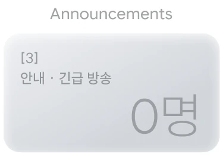</i><i class="pc barv" data-o="1" style="left:calc(var(--u)*184.72);top:calc(var(--u)*46.00);width:calc(var(--u)*213.68);height:calc(var(--u)*182.00)">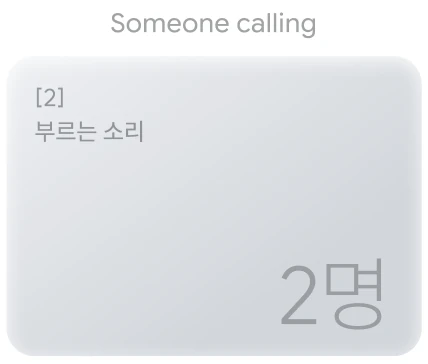</i><i class="pc barv" data-o="2" style="left:calc(var(--u)*398.40);top:calc(var(--u)*-4.00);width:calc(var(--u)*278.60);height:calc(var(--u)*232.00)">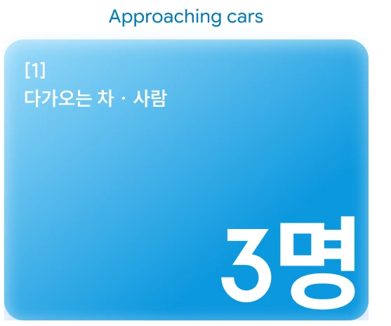</i></div></figure><div class="qcard" style="min-height:calc(var(--u)*307)"><span class="qm">“</span><div class="qt"><span class="who">참여자 A · 수동+전동</span><p class="ko">누가 부르는 소리, <b>차 지나가는 소리를 못 들어서</b> 늘 조심해요.</p><p class="en">“I can’t hear people calling me or cars passing, so I’m always on guard.”</p></div><div class="dv"></div><div class="qt"><span class="who">참여자 B · 수동+반전동</span><p class="ko">위험하게 다가오면 알아서 피해주면 좋겠어요. <b>치고 간 적도 있어요</b>.</p><p class="en">“I wish it would steer me away when something comes at me. I’ve been hit before.”</p></div></div></div></div><div class="ig"><div class="ih"><h3>보지 않아도 위험을 먼저 짚어줘야 해요.</h3></div><div class="row"><figure class="cbox" style="height:calc(var(--u)*314)" aria-label="사고가 날 뻔한 원인: 미처 보지 못한 턱·단차 5명, 시야 밖에서 다가온 사람·자전거 4명, 턱이 바닥과 구분이 안 됨 3명, 경사로 2명씩"><div class="qh"><span class="qq">Q</span><div><p class="qe">What caused their near-misses on the move?</p><p class="qk">이동 중 사고가 날 뻔했던 순간, 무엇 때문이었나요?</p></div></div><div class="ca" style="width:calc(var(--u)*661.0);height:calc(var(--u)*270.0)"><i class="pc pop" data-o="0" style="left:calc(var(--u)*439.00);top:calc(var(--u)*-18.56);width:calc(var(--u)*82.00);height:calc(var(--u)*81.00)">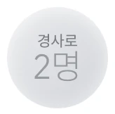</i><i class="pc pop" data-o="1" style="left:calc(var(--u)*569.00);top:calc(var(--u)*10.44);width:calc(var(--u)*82.00);height:calc(var(--u)*82.00)">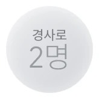</i><i class="pc pop" data-o="2" style="left:calc(var(--u)*448.00);top:calc(var(--u)*61.44);width:calc(var(--u)*138.00);height:calc(var(--u)*138.00)">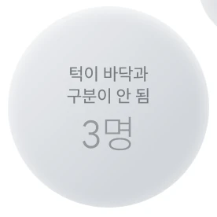</i><i class="pc pop" data-o="3" style="left:calc(var(--u)*258.00);top:calc(var(--u)*37.44);width:calc(var(--u)*174.00);height:calc(var(--u)*174.00)">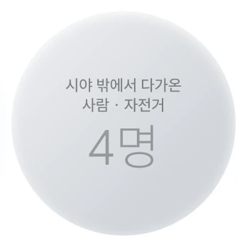</i><i class="pc pop" data-o="4" style="left:calc(var(--u)*23.00);top:calc(var(--u)*5.44);width:calc(var(--u)*232.00);height:calc(var(--u)*238.00)">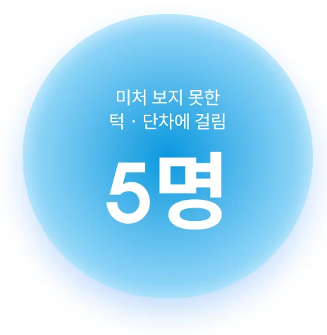</i></div></figure><div class="qcard" style="min-height:calc(var(--u)*314)"><span class="qm">“</span><div class="qt"><span class="who">참여자 B · 수동+반전동</span><p class="ko">턱이 시야에 있어도 제가 못 알아채면 그냥 지나쳐요. 그걸 먼저 짚어줬으면 해요.</p><p class="en">“Even when a curb is in view, I miss it if I don’t notice. I want it flagged first.”</p></div><div class="dv"></div><div class="qt"><span class="who">참여자 C · 수동+전동</span><p class="ko">시야가 산만해지거나 <b>사각지대가 생길까 봐</b> 걱정돼요.</p><p class="en">“I worry the view gets cluttered or creates blind spots.”</p></div></div></div></div></div><div class="gg"><div class="ig"><div class="ih"><span class="vt v3">New finding</span><h3>전동 휠체어는 이동 범위를 넓혀주지만, 배터리로 어디까지 갈 수 있는지 몰라 새로운 곳을 망설여요.</h3><p class="gen">Power chairs widen their range, but not knowing how far the battery will go makes new places feel risky.</p></div><div class="row"><figure class="cbox" style="height:calc(var(--u)*372)" aria-label="전동 휠체어 걱정: 충전소 찾기 5명, 남은 거리 짐작 4명, 처음 가는 곳 2명"><div class="qh"><span class="qq">Q</span><div><p class="qe">What worries them most on a power wheelchair?</p><p class="qk">전동 휠체어로 이동할 때 무엇이 가장 걱정되나요?</p></div></div><div class="ca" style="width:calc(var(--u)*661.0);height:calc(var(--u)*224.0)"><i class="pc barv" data-o="0" style="left:calc(var(--u)*-5.00);top:calc(var(--u)*116.00);width:calc(var(--u)*222.33);height:calc(var(--u)*112.00)">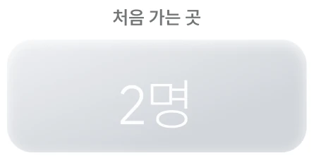</i><i class="pc barv" data-o="1" style="left:calc(var(--u)*219.33);top:calc(var(--u)*46.00);width:calc(var(--u)*222.33);height:calc(var(--u)*182.00)">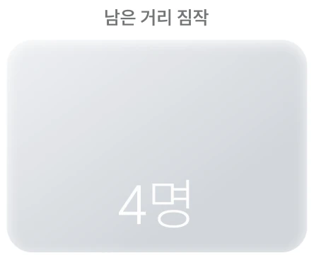</i><i class="pc barv" data-o="2" style="left:calc(var(--u)*443.67);top:calc(var(--u)*-4.00);width:calc(var(--u)*233.33);height:calc(var(--u)*232.00)">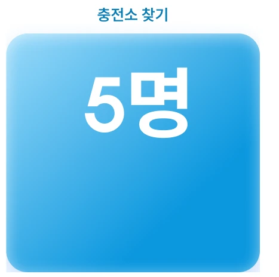</i></div></figure><div class="qcard" style="min-height:calc(var(--u)*372)"><span class="qm">“</span><div class="qt"><span class="who">참여자 B · 수동+반전동</span><p class="ko">전동 휠체어를 타면 덜 힘들어서 혼자 많이 가요. 하지만 충전된 정도에 따라 <b>얼마나 갈 수 있는지 잘 모르겠고</b>, 충전소 찾는 것도 힘들어서 <b>매번 같은 곳만 가게 돼요</b>.</p><p class="en">“On a power chair I go out alone more — but I can’t tell how far the charge lasts, so I keep going to the same places.”</p></div><div class="dv"></div><div class="qt"><span class="who">참여자 D · 전동</span><p class="ko">외부 충전이 어려워서 <b>멀리 못 가요</b>. 잔량은 꼭 확인하고 나가요.</p><p class="en">“Charging outside is hard, so I can’t go far. I always check the battery before leaving.”</p></div></div></div></div><div class="ig"><div class="ih"><h3>‘장애인 화장실 있음’ 표시는 많지만, 실제로 쓸 수 있는 곳은 4곳 중 1곳뿐이었어요</h3></div><div class="row"><figure class="cbox" style="height:calc(var(--u)*550)" aria-label="지도 표시 100% → 문턱 없음 58% → 회전 공간 33% → 혼자 실제 사용 25%"><div class="qh"><span class="qq">Q</span><div><p class="qe">Can they actually use a restroom marked “accessible”?</p><p class="qk">지도에 ‘장애인 화장실 있음’이면, 정말 쓸 수 있었나요?</p></div></div><div class="ca" style="width:calc(var(--u)*663.0);height:calc(var(--u)*427.0)"><i class="pc barh" data-o="0" style="left:calc(var(--u)*-4.00);top:calc(var(--u)*-4.00);width:calc(var(--u)*632.00);height:calc(var(--u)*101.00)">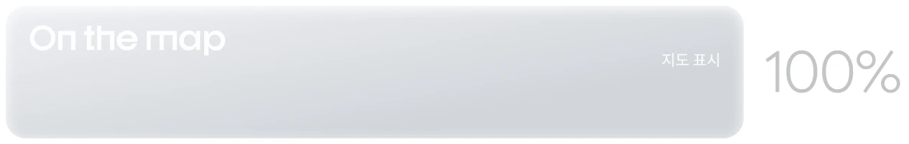</i><i class="pc barh" data-o="1" style="left:calc(var(--u)*-4.00);top:calc(var(--u)*99.00);width:calc(var(--u)*518.00);height:calc(var(--u)*101.00)">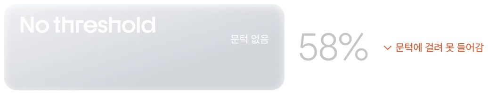</i><i class="pc barh" data-o="2" style="left:calc(var(--u)*-4.00);top:calc(var(--u)*202.00);width:calc(var(--u)*400.00);height:calc(var(--u)*101.00)">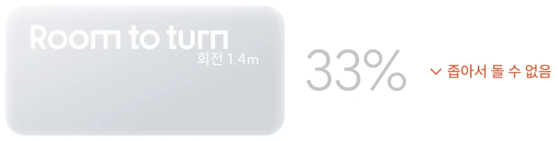</i><i class="pc barh" data-o="3" style="left:calc(var(--u)*-4.00);top:calc(var(--u)*305.00);width:calc(var(--u)*350.00);height:calc(var(--u)*148.00)">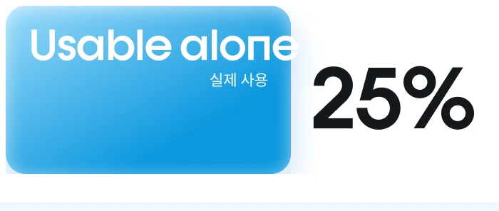</i></div></figure><div class="qcard" style="min-height:calc(var(--u)*550)"><span class="qm">“</span><div class="qt"><span class="who">참여자 F · 전동</span><p class="ko">장애인 화장실이라고 해서 다 갈 수 있는 화장실이 아니에요. 문턱도 있고, 공간이 좁은 곳도 있고 그래서 <b>실제로 갈 수 있는 장애인 화장실은 더 없어요</b>.</p><p class="en">Not every “accessible” restroom is usable. Some have thresholds, some are too narrow — so the ones I can actually use are even fewer.</p></div><div class="dv"></div><div class="qt"><span class="who">참여자 C · 수동+전동</span><p class="ko">화장실에 조그마한 턱이 있어서, <b>사람들 올 때까지 기다렸다가</b> 나왔어요.</p><p class="en">There was a small threshold in the restroom — I had to wait until someone came to help me out.</p></div><div class="dv"></div><div class="qt"><span class="who">참여자 A · 수동+전동</span><p class="ko">생각보다 공간이 좁은 곳이 정말 많아요. 그래서 맨날 <b>안을 한 번 보고 돌아오는 경우가 많아요</b>.</p><p class="en">There are so many places that are much smaller than expected. That’s why I usually end up just taking a look inside and turning right</p></div></div></div></div></div><div class="ban"><p class="bk">Insight</p><p class="bt">핵심은 ‘턱 측정’ 하나가 아니라, 출발 전의 불확실성을 없애는 것이었어요</p><p class="be">The real value wasn’t measuring a single step — it was removing uncertainty before leaving.</p></div></div>
</section>
<section id="s08hyp" class="fs hx hy dk" data-g="Strategy" data-l="04 · Hypothesis" data-anim="slideblur">
<div class="wrap"><div class="hgrid"><div class="hs s1" data-c="0"><b>STEP 1</b><span>처음 세운 가설<i>Initial hypothesis</i></span></div><div class="har" data-c="1" aria-hidden="true">→</div><div class="hs s2" data-c="2"><b>STEP 2</b><span>인터뷰에서 들은 것<i>What we heard</i></span></div><div class="har" data-c="3" aria-hidden="true">→</div><div class="hs s3" data-c="4"><b>STEP 3</b><span>바뀐 가설<i>Revised hypothesis</i></span></div><div class="hc c0" data-c="0"><p class="hk"><b>H1</b>출발 전</p><p>실측 기반 AR 안내가 있으면, 현장에서 막히는 일이 줄어들 것이다.</p></div><div class="har" data-c="1" aria-hidden="true">→</div><div class="hc c2" data-c="2"><span class="who d">참여자 F · 전동</span><p class="ko">현장보다 출발 전이 더 힘들었어요. 다들 방문 전에 매번 <b>전화로 문턱을 확인</b>하고, 확인이 안 되면 아예 가지 않았어요.</p><p class="en">Before leaving was harder than being there. Everyone called ahead to check thresholds — and if unsure, they didn’t go.</p></div><div class="har" data-c="3" aria-hidden="true">→</div><div class="hc c4" data-c="4"><p class="hk2">H1 수정</p><p>출발 전에 실측값으로 갈 수 있는지 먼저 판정하고, 휠체어 기준 소요 시간 · 배터리 경로까지 보여준다.</p></div><div class="hc c0" data-c="0"><p class="hk"><b>H2</b>이동 중 · 청각</p><p>안내 방송을 긴급도별로 렌즈에 띄우면, 이동 중 정보 단절이 풀릴 것이다.</p></div><div class="har" data-c="1" aria-hidden="true">→</div><div class="hc c2" data-c="2"><span class="who d">참여자 F · 전동</span><p class="ko">방송보다 <b>뒤에서 오는 차를 못 들어 부딪힌</b> 경험 개선이 시급했어요</p><p class="en">No one mentioned announcements. Instead, many were hit by cars they couldn’t hear coming.</p></div><div class="har" data-c="3" aria-hidden="true">→</div><div class="hc c4" data-c="4"><p class="hk2">H2 수정</p><p>다가오는 차 · 사람을 글라스가 먼저 감지해 시각 · 진동으로 알리고, 방송은 자막으로 보조한다.</p></div><div class="hc c0" data-c="0"><p class="hk"><b>H3</b>이동 중 · 시각</p><p>잔존 시력을 더 선명하게 보여주면, 멈추지 않고 완주할 수 있을 것이다.</p></div><div class="har" data-c="1" aria-hidden="true">→</div><div class="hc c2" data-c="2"><span class="who d">참여자 F · 전동</span><p class="ko">내가 파악하는 것보다 글라스가 먼저 내 시야에서의 위험을 알려주길 원했어요 — <b>놓친 위험을 먼저 알려주길</b> 원했어요.</p><p class="en">“If I’m not looking, how would the glasses know?” — they wanted missed risks flagged first.</p></div><div class="har" data-c="3" aria-hidden="true">→</div><div class="hc c4" data-c="4"><p class="hk2">H3 수정</p><p>시야에 들어왔지만 내가 알아채지 못한 단차 · 장애물을, 글라스가 먼저 빠르게 알려준다.</p></div></div><div class="hfin"><p class="fk">FINAL HYPOTHESIS</p><p class="ft">출발 전의 정보 공백과 이동 중의 감각 단절을 하나의 글라스로 해소하면,<br>휠체어 사용자도 타인 의존 없이 전 구간을 혼자 이동할 수 있을 것이다.</p><p class="fe">If one glass closes both gaps, wheelchair users can travel the whole way independently.</p></div></div>
</section>
<section id="s09solution" class="fs hx so dk" data-g="Strategy" data-l="06 · Solution" data-anim="tilt">
<div class="wrap"><div class="srow"><div class="scard"><div class="sh"><b>출발 전</b><span>Before departure</span></div><p class="st">가는 길은 사진으로 미리 보고, 입구는 집에서 판정해<br>갈 수 있는 곳만 골라 출발해요</p><p class="se">Preview the route and judge the entrance from home — then go only where you can get in.</p><div class="lanes"><div class="lane lt"><span class="k">TODAY</span><div class="seg gy" style="width:calc(var(--u)*170)">모른 채 이동</div><div class="seg gy" style="width:calc(var(--u)*96)">현장 도착</div><div class="seg bad" style="width:calc(var(--u)*104)">문턱 발견</div><span class="mk x">✕</span><em class="r">헛걸음</em></div><div class="lane lo"><span class="k">OLWAYS</span><div class="seg bl" style="width:calc(var(--u)*150)">집에서 끝나는 확인</div><div class="seg bl" style="width:calc(var(--u)*104)">출발 전 판정</div><div class="seg gd" style="width:calc(var(--u)*128)">갈 수 있는 곳만</div><span class="mk o">✓</span><em class="g">도착</em></div></div></div><div class="scard"><div class="sh"><b>이동 중</b><span>On the move</span></div><p class="st">차 · 자전거 · 턱이 다가오면,<br>급정거하기 전에 안경이 먼저 알려줘요</p><p class="se">Cars, bikes and curbs — the glasses warn you before you have to brake hard.</p><div class="lanes"><div class="lane lt"><span class="k">TODAY</span><div class="seg gy" style="width:calc(var(--u)*170)">모르는 채 다가감</div><div class="seg gy" style="width:calc(var(--u)*96)">위험 등장</div><div class="seg bad" style="width:calc(var(--u)*112)">보고서야 인지</div><span class="mk x">✕</span><em class="r">급정거</em></div><div class="lane lo"><span class="k">OLWAYS</span><div class="seg gd" style="width:calc(var(--u)*150)">확보된 판단 시간</div><div class="seg gy" style="width:calc(var(--u)*90)">위험 등장</div><div class="seg bl" style="width:calc(var(--u)*140)">렌즈 · 진동 경보</div><span class="mk o">✓</span><em class="g">여유 있게</em></div></div></div></div></div>
</section>
<section id="s10flow" class="fs" data-g="Strategy" data-l="07 · User flow" data-anim="rise" style="aspect-ratio:1400/920.00">

<div class="b tag" data-side="r" style="left:44.3571%;top:9.7826%;width:11.2857%;height:4.8913%"></div>
<div class="b title" data-side="r" style="left:2.4286%;top:14.8913%;width:95.1429%;height:5.6522%"></div>
<div class="b std" data-side="r" style="left:2.4286%;top:21.4130%;width:95.1429%;height:8.1522%"></div>
<div class="b draw" data-side="r" style="left:2.4286%;top:32.6087%;width:95.1429%;height:47.8261%"></div>
<div class="b std" data-side="r" style="left:2.4286%;top:83.4783%;width:95.1429%;height:6.7391%"></div>
</section>
<section id="s11iter" class="fs hx ut dk" data-g="Design" data-l="08 · Usability test" data-anim="focus">
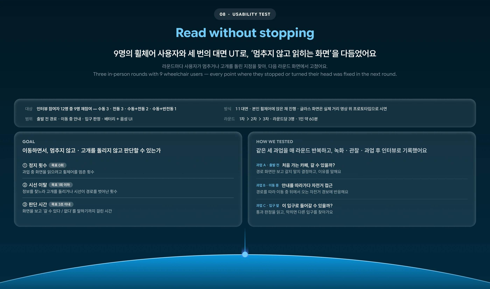<div class="wrap"><article class="ui" data-n="3"><header class="uh"><p class="up"><span class="un">1</span>지도와 장소 목록이 시야 왼쪽에 있어, 보려면 고개를 돌려야 했어요</p><h3>지도 · 장소 패널을 모두 익숙한 오른쪽으로 옮기고,<br>경로는 바닥에 붙였어요</h3></header><div class="upin"><div class="stage"><div class="vv" data-i="0"><span class="vl">As Is · 1차</span></div><div class="vv" data-i="1"><span class="vl">As Is · 2차</span></div><div class="vv tobe" data-i="2"><span class="vl">To Be · 3차</span></div></div><div class="seg3 bub" role="tablist"><button class="sb" data-i="0">As Is · 1차</button><button class="sb" data-i="1">As Is · 2차</button><button class="sb tb" data-i="2">To Be · 3차</button><i class="ind bub"></i></div></div><div class="why"><div class="wd"><div class="wm"><i class="x">✕</i></div><span class="wa">→</span><div class="wm r"><i class="o">✓</i></div><p class="wl"><span class="r">As Is · 왼쪽</span><span class="b">To Be · 오른쪽</span></p></div><div><p class="wk">왜 오른쪽인가요?</p><p class="wt">사람들은 내비게이션 앱과 차량 내비에서 지도를 오른쪽에서 보는 데 익숙해요. 패널을 같은 위치로 옮기자, 처음 쓰는 사람도 시선을 찾지 않고 바로 경로 정보를 읽을 수 있었어요.</p><p class="we">People are used to reading navigation on the right — matching that habit lets them find route info without searching.</p></div></div><div class="ups"><div><p class="pk">문제</p><p>지도 · 장소 목록이 왼쪽에 있어, 오른쪽 내비에 익숙한 사용자의 시선이 엇갈렸어요.</p></div><div><p class="sk">해결</p><p class="sv">두 패널을 오른쪽으로 옮기고(2차), 소요 시간과 진행 바를 한 카드에 모았어요(3차).</p></div></div><div class="uqs"><div class="uq"><span class="who d">참여자 A · 수동+전동</span><p class="ko">“지도가 왼쪽에 있으니까 자꾸 고개가 돌아가요. 내비는 원래 오른쪽에서 보잖아요.”</p><p class="en">“With the map on the left, I keep turning my head. I’m used to navigation on the right.”</p></div><div class="uq"><span class="who d">참여자 D · 전동</span><p class="ko">“경로가 바닥에 깔리니까 핸들 잡은 채로 그냥 따라가면 돼서 편해요.”</p><p class="en">“The route on the ground lets me just follow it with my hands on the wheels.”</p></div></div></article><article class="ui" data-n="3"><header class="uh"><p class="up"><span class="un">2</span>하단 마이크 아이콘이 이동 경로와 겹치고, 듣고 있는지 알기 어려웠어요</p><h3>음성 인식을 아이콘 대신,<br>가로로 긴 음성 캡슐과 움직이는 그라데이션으로 바꿨어요</h3></header><div class="upin"><div class="stage"><div class="vv" data-i="0"><span class="vl">As Is · 1차</span><div class="zc"><ul><li>마이크 아이콘이 경로 위에 겹쳐요</li><li>현위치 마커가 경로 중간에 떠 있어요</li></ul></div></div><div class="vv" data-i="1"><span class="vl">As Is · 2차</span><div class="zc"><ul><li>말할 때 마이크 아이콘 위에 작은 자막만 떠요</li><li>듣는 중인지 상태가 잘 구분되지 않아요</li></ul></div></div><div class="vv tobe" data-i="2"><span class="vl">To Be · 3차</span><div class="zc ok"><ul><li>가로 캡슐로 경로 아래에 분리</li><li>인식 중엔 그라데이션이 흐르며 빛나요</li></ul></div></div></div><div class="seg3 bub" role="tablist"><button class="sb" data-i="0">As Is · 1차</button><button class="sb" data-i="1">As Is · 2차</button><button class="sb tb" data-i="2">To Be · 3차</button><i class="ind bub"></i></div></div><div class="ups"><div><p class="pk">문제</p><p>마이크 아이콘이 바닥 경로와 겹치고, 듣고 있는지 알 수 없었어요.</p></div><div><p class="sk">해결</p><p class="sv">가로 캡슐로 경로와 분리하고, 듣는 중엔 그라데이션이 흐르게 했어요.</p></div></div><div class="uqs"><div class="uq"><span class="who d">참여자 B · 수동+반전동</span><p class="ko">“마이크 아이콘이 길 위에 떠 있으니까 경로가 가려져요.”</p><p class="en">“The mic icon floats on the path and covers the route.”</p></div><div class="uq"><span class="who d">참여자 E · 전동</span><p class="ko">“말을 했는데 듣고 있는 건지 아닌지 헷갈려서 한 번 더 말했어요.”</p><p class="en">“I spoke but couldn’t tell if it was listening, so I said it twice.”</p></div></div></article><article class="ui" data-n="2"><header class="uh"><p class="up"><span class="un">3</span>배터리 %로는 ‘갔다 올 수 있는지’ 알 수 없었어요</p><h3>전동 휠체어 배터리 퍼센트를,<br>지금 배터리로 갈 수 있는 시간으로 바꿨어요</h3></header><div class="upin"><div class="stage"><div class="vv" data-i="0"><span class="vl">As Is · 1차</span></div><div class="vv tobe" data-i="1"><span class="vl">To Be · 3차</span></div></div><div class="seg3 bub" role="tablist"><button class="sb" data-i="0">As Is · 1차</button><button class="sb tb" data-i="1">To Be · 3차</button><i class="ind bub"></i></div></div><div class="ups"><div><p class="pk">문제</p><p>% 게이지는 남은 거리를 머릿속으로 계산하게 했어요.</p></div><div><p class="sk">해결</p><p class="sv">‘주행 가능 5km’를 크게, 가까운 충전기는 AR 핀으로 띄웠어요.</p></div></div><div class="uqs"><div class="uq"><span class="who d">참여자 D · 전동</span><p class="ko">“12%라고 하면 갔다 올 수 있는지 머릿속으로 계산해야 해요.”</p><p class="en">“With 12%, I have to calculate in my head whether I can get back.”</p></div><div class="uq"><span class="who d">참여자 A · 수동+전동</span><p class="ko">“5km, 몇 분이라고 나오니까 저기까진 되겠다 싶어요. 충전기 위치도 같이 보이니까 덜 불안해요.”</p><p class="en">“Seeing 5km, I know I can make it — and seeing chargers makes me less anxious.”</p></div></div></article></div>
</section>
<section id="s12lens" class="fs hx ln" data-g="Design" data-l="09 · Through the lens" data-anim="rise">
<div class="lhead" style="aspect-ratio:1400/583"><div class="b std" style="left:39.0357%;top:15.4374%;width:21.9286%;height:10.8062%"></div><div class="b title" style="left:2.4286%;top:26.5866%;width:95.1429%;height:8.9194%"></div><div class="b std" style="left:2.4286%;top:36.8782%;width:95.1429%;height:16.9811%"></div><div class="b std" style="left:2.4286%;top:58.6621%;width:95.1429%;height:35.5060%"></div></div><div class="lfull" data-i="0"><div class="lstick"><div class="lv"><video src="media/scan.mp4" poster="media/scan.jpg" muted playsinline loop preload="metadata"></video><span class="live">PROTOTYPE · S0</span></div></div><div class="lsheet"><div class="lcap "></div></div></div><div class="hwrap"><div class="htrack"><div class="hp"><div class="hv"><video src="media/route.mp4" poster="media/route.jpg" muted playsinline loop preload="metadata"></video><span class="live">PROTOTYPE · S1</span></div><div class="lcap hc"></div></div><div class="hp"><div class="hv"><video src="media/slope.mp4" poster="media/slope.jpg" muted playsinline loop preload="metadata"></video><span class="live">PROTOTYPE · S2</span></div><div class="lcap hc"></div></div><div class="hp"><div class="hv"><video src="media/door.mp4" poster="media/door.jpg" muted playsinline loop preload="metadata"></video><span class="live">PROTOTYPE · S3</span></div><div class="lcap hc"></div></div></div><div class="hdots bub"><i data-i="0"></i><i data-i="1"></i><i data-i="2"></i></div></div><div class="lfull" data-i="4"><div class="lstick"><div class="lv"><video src="media/arrive.mp4" poster="media/arrive.jpg" muted playsinline loop preload="metadata"></video><span class="live">PROTOTYPE · S4</span></div></div><div class="lsheet"><div class="lcap "></div></div></div>
</section>
<section id="s13anat" class="fs" data-g="Design" data-l="09 · Lens anatomy" data-anim="rise" style="aspect-ratio:1400/1595.65">

<div class="b tag" data-side="r" style="left:40.4643%;top:5.6403%;width:19.0714%;height:2.8202%"></div>
<div class="b title" data-side="r" style="left:2.4286%;top:8.5858%;width:95.1429%;height:3.2589%"></div>
<div class="b std" data-side="r" style="left:2.4286%;top:12.3461%;width:95.1429%;height:6.2044%"></div>
<div class="b lensb" data-side="r" style="left:2.4286%;top:20.3052%;width:95.1429%;height:40.2344%"></div>
<div class="b std" data-side="r" style="left:2.4286%;top:62.2943%;width:95.1429%;height:8.9619%"></div>
<div class="b std" data-side="r" style="left:2.4286%;top:73.0110%;width:95.1429%;height:21.3706%"></div>
<div class="spot" style="left:2.8571%;top:20.6812%;width:94.2857%;height:39.4823%"></div>
<button class="bdg" data-i="0" aria-label="1번 요소" style="left:76.1429%;top:23.4387%"></button>
<button class="bdg" data-i="1" aria-label="2번 요소" style="left:50.5000%;top:32.9019%"></button>
<button class="bdg" data-i="2" aria-label="3번 요소" style="left:40.0714%;top:51.4524%"></button>
<button class="bdg" data-i="3" aria-label="4번 요소" style="left:37.7143%;top:43.1799%"></button>
<button class="bdg" data-i="4" aria-label="5번 요소" style="left:61.7143%;top:47.5041%"></button>
<button class="bdg" data-i="5" aria-label="6번 요소" style="left:37.7143%;top:56.5913%"></button>
<div class="cring" data-i="0" style="left:2.8571%;top:62.6704%;width:15.2143%;height:8.2098%"></div>
<div class="cring" data-i="1" style="left:18.6429%;top:62.6704%;width:15.2143%;height:8.2098%"></div>
<div class="cring" data-i="2" style="left:34.5000%;top:62.6704%;width:15.2143%;height:8.2098%"></div>
<div class="cring" data-i="3" style="left:50.2857%;top:62.6704%;width:15.2143%;height:8.2098%"></div>
<div class="cring" data-i="4" style="left:66.0714%;top:62.6704%;width:15.2143%;height:8.2098%"></div>
<div class="cring" data-i="5" style="left:81.9286%;top:62.6704%;width:15.2143%;height:8.2098%"></div>
</section>
<section id="s14pass" class="fs dk" data-g="Design" data-l="09 · Pass judgment" data-anim="rise" style="aspect-ratio:1400/1248.00">

<div class="b tag" data-side="r" style="left:40.2143%;top:7.2115%;width:19.5714%;height:3.6058%"></div>
<div class="b title" data-side="r" style="left:2.4286%;top:10.9776%;width:95.1429%;height:4.1667%"></div>
<div class="b std" data-side="r" style="left:2.4286%;top:15.7853%;width:95.1429%;height:7.9327%"></div>
<div class="b lensb" data-side="r" style="left:2.4286%;top:25.9615%;width:95.1429%;height:53.1250%"></div>
<div class="b std" data-side="r" style="left:2.4286%;top:81.3301%;width:95.1429%;height:11.4583%"></div>
<div class="spot" style="left:2.8571%;top:26.4423%;width:94.2857%;height:52.1635%"></div>
<button class="bdg" data-i="0" aria-label="1번 요소" style="left:36.9286%;top:41.1058%"></button>
<button class="bdg" data-i="1" aria-label="2번 요소" style="left:41.6429%;top:64.6635%"></button>
<button class="bdg" data-i="2" aria-label="3번 요소" style="left:5.6429%;top:66.9872%"></button>
<div class="cring" data-i="0" style="left:2.8571%;top:81.8109%;width:30.6429%;height:10.4968%"></div>
<div class="cring" data-i="1" style="left:34.6429%;top:81.8109%;width:30.6429%;height:10.4968%"></div>
<div class="cring" data-i="2" style="left:66.5000%;top:81.8109%;width:30.6429%;height:10.4968%"></div>
</section>
<section id="s15loop" class="fs dk" data-g="Outcome" data-l="10 · Data loop" data-anim="rise" style="aspect-ratio:1400/888.00">

<div class="b tag" data-side="r" style="left:44.3571%;top:10.1351%;width:11.2857%;height:5.2928%"></div>
<div class="b title" data-side="r" style="left:2.4286%;top:15.6532%;width:95.1429%;height:5.8559%"></div>
<div class="b std" data-side="r" style="left:2.4286%;top:22.4099%;width:95.1429%;height:11.1486%"></div>
<div class="b ring" data-side="l" style="left:6.7143%;top:43.4685%;width:25.1429%;height:39.6396%"></div>
<div class="b std" data-side="l" style="left:11.7143%;top:51.3514%;width:15.1429%;height:23.8739%"></div>
<div class="b node" data-side="l" style="left:14.8571%;top:37.1622%;width:8.8571%;height:13.9640%"></div>
<div class="b node" data-side="l" style="left:27.0000%;top:56.3063%;width:8.8571%;height:13.9640%"></div>
<div class="b node" data-side="l" style="left:14.8571%;top:75.4505%;width:8.8571%;height:13.9640%"></div>
<div class="b node" data-side="l" style="left:2.7143%;top:56.3063%;width:8.8571%;height:13.9640%"></div>
<div class="b std" data-side="r" style="left:37.0000%;top:45.4392%;width:60.5714%;height:35.6982%"></div>
</section>
<section id="s16concl" class="fs" data-g="Outcome" data-l="11 · Conclusion" data-anim="flip" style="aspect-ratio:1400/713.00">

<div class="b dissolve" data-side="r" style="left:44.0357%;top:12.6227%;width:11.9286%;height:6.3114%"></div>
<div class="b dissolve" data-side="r" style="left:2.4286%;top:19.2146%;width:95.1429%;height:7.2931%"></div>
<div class="b dissolve" data-side="r" style="left:2.4286%;top:27.6297%;width:95.1429%;height:10.5189%"></div>
<div class="b std" data-side="l" style="left:2.4286%;top:42.0757%;width:31.5357%;height:29.4530%"></div>
<div class="b std" data-side="r" style="left:34.2143%;top:42.0757%;width:31.5714%;height:29.4530%"></div>
<div class="b std" data-side="r" style="left:66.0357%;top:42.0757%;width:31.5357%;height:29.4530%"></div>
<div class="b dissolve" data-side="r" style="left:2.4286%;top:75.4558%;width:95.1429%;height:11.9215%"></div>
</section>
<section id="s17thanks" class="fs dk" data-g="Outcome" data-l="Thank you" data-anim="dissolve" style="aspect-ratio:1400/432.01">

<div class="b std" data-side="r" style="left:33.3214%;top:21.7589%;width:33.3571%;height:28.3560%"></div>
<div class="b title" data-side="r" style="left:33.6786%;top:53.7028%;width:32.6429%;height:13.3100%"></div>
<div class="b tag" data-side="r" style="left:38.8571%;top:70.6006%;width:22.2857%;height:7.7545%"></div>
</section>
</main>

<script src="https://cdnjs.cloudflare.com/ajax/libs/gsap/3.12.5/gsap.min.js"></script>
<script src="https://cdnjs.cloudflare.com/ajax/libs/gsap/3.12.5/ScrollTrigger.min.js"></script>
<script>
(()=>{
const $=s=>document.querySelector(s),$$=s=>[...document.querySelectorAll(s)];
const setK=()=>document.documentElement.style.setProperty('--k',(innerWidth/1400).toFixed(5));setK();addEventListener('resize',setK);
const secs=$$('#main > section');

/* nav */
const groups=[];secs.forEach(s=>{if(!groups.find(g=>g.name===s.dataset.g))groups.push({name:s.dataset.g,el:s})});
groups.forEach(g=>{const b=document.createElement('button');b.className='gl';b.textContent=g.name;b.onclick=()=>to(g.el);$('#groups').appendChild(b);g.btn=b});
const topOf=el=>el.getBoundingClientRect().top+scrollY;
const to=el=>window.scrollTo({top:topOf(el)-(el.id==='s01cover'?0:0),behavior:'smooth'});
$$('[data-to]').forEach(b=>b.onclick=()=>to(document.getElementById(b.dataset.to)));
let cur=-1,lastY=0;
function upd(){const y=scrollY,probe=y+innerHeight*.35;let i=0;secs.forEach((s,j)=>{if(topOf(s)<=probe)i=j});
  const np=y+32;let dk=false;secs.forEach(s=>{const t=topOf(s);if(t<=np&&t+s.offsetHeight>np&&s.classList.contains('dk'))dk=true});document.body.classList.toggle('dk',dk);
  if(i!==cur){cur=i;$('#nowt').textContent=secs[i].dataset.l;$('#nowi').textContent=String(i+1).padStart(2,'0');groups.forEach(g=>g.btn.classList.toggle('on',g.name===secs[i].dataset.g));moveInd()}
  $('#go').style.setProperty('--prog',(y/(document.documentElement.scrollHeight-innerHeight)).toFixed(3));
  $('#nav').classList.toggle('hide',y>lastY+4&&y>200&&!navLock);if(y<lastY-4)$('#nav').classList.remove('hide');lastY=y;}
let navLock=false;
function wob(el){if(!el)return;el.classList.remove('wob');void el.offsetWidth;el.classList.add('wob')}
function moveInd(){const b=document.querySelector('#groups .gl.on'),g=$('#gind');if(!b){g.style.opacity=0;return}g.style.opacity=1;g.style.left=b.offsetLeft+'px';g.style.width=b.offsetWidth+'px';wob(g)}
addEventListener('pointerdown',e=>{const b=e.target.closest('.now,.go,.sb,.gl,.hdots');if(b)wob(b.classList.contains('gl')?$('#gind'):b)},{passive:true});
addEventListener('resize',()=>moveInd());
$('#go').onclick=()=>{navLock=true;setTimeout(()=>navLock=false,1200);to(secs[cur>=secs.length-1?0:cur+1])};
addEventListener('scroll',()=>requestAnimationFrame(upd),{passive:true});upd();

/* videos play only when visible */
const io=new IntersectionObserver(es=>es.forEach(e=>{const v=e.target;if(e.isIntersecting){v.play().catch(()=>{})}else v.pause()}),{threshold:.2});
$$('video').forEach(v=>io.observe(v));

/* spotlight cycling (anatomy / pass) */
$$('.spot').forEach(sp=>{const sec=sp.closest('section'),bd=[...sec.querySelectorAll('.bdg')],cr=[...sec.querySelectorAll('.cring')];let i=0,hold=0,vis=false;
  const r=()=>sp.getBoundingClientRect();
  function pick(k){i=k;const R=r(),B=bd[k].getBoundingClientRect();sp.style.setProperty('--sx',((B.left+B.width/2-R.left)/R.width*100)+'%');sp.style.setProperty('--sy',((B.top+B.height/2-R.top)/R.height*100)+'%');
    bd.forEach((b,j)=>b.classList.toggle('on',j===k));cr.forEach((c,j)=>c.classList.toggle('on',j===k))}
  bd.forEach((b,k)=>b.onclick=()=>{hold=performance.now()+8000;sp.classList.add('on');pick(k)});
  new IntersectionObserver(es=>es.forEach(e=>{vis=e.isIntersecting;if(vis){sp.classList.add('on');pick(0)}else{sp.classList.remove('on');cr.forEach(c=>c.classList.remove('on'))}}),{threshold:.55}).observe(sp);
  setInterval(()=>{if(vis&&performance.now()>hold)pick((i+1)%bd.length)},2600);});

/* idle → back to top */
let idle;const bump=()=>{clearTimeout(idle);idle=setTimeout(()=>window.scrollTo({top:0,behavior:'smooth'}),180000)};['pointerdown','wheel','touchstart','keydown'].forEach(e=>addEventListener(e,bump,{passive:true}));bump();

if(!window.gsap||matchMedia('(prefers-reduced-motion: reduce)').matches)return;
gsap.registerPlugin(ScrollTrigger);ScrollTrigger.config({ignoreMobileResize:true});
const E='power3.out';

/* cover: photo settles in, logo rises; parallax on scroll */
gsap.from('#s01cover .cv',{scale:1.18,duration:2.2,ease:'power2.out'});
gsap.from('#s01cover .b',{y:60,opacity:0,duration:1.3,ease:E,stagger:.18,delay:.3});
gsap.to('#s01cover .cv',{yPercent:12,scale:1.06,ease:'none',scrollTrigger:{trigger:'#s01cover',start:'top top',end:'bottom top',scrub:true}});
gsap.to('#s01cover .b',{yPercent:-60,opacity:0,ease:'none',stagger:.05,scrollTrigger:{trigger:'#s01cover',start:'top top',end:'70% top',scrub:true}});


const ST=(el,start)=>({trigger:el,start:start||'top 88%',toggleActions:'play none none reverse'});
/* titles: open from the centre */
$$('.b.title').forEach(el=>gsap.fromTo(el,{clipPath:'inset(0 50% 0 50%)',opacity:0},{clipPath:'inset(0 0% 0 0%)',opacity:1,duration:1.1,ease:'power3.inOut',scrollTrigger:ST(el,'top 92%')}));
/* eyebrow tags pop */
$$('.b.tag').forEach(el=>gsap.fromTo(el,{y:16,opacity:0,scale:.85},{y:0,opacity:1,scale:1,duration:.7,ease:'back.out(2.2)',scrollTrigger:ST(el,'top 94%')}));
/* insights: dissolve, grow from the centre */
$$('.b.dissolve').forEach(el=>gsap.fromTo(el,{opacity:0,scale:.82,filter:'blur(10px)'},{opacity:1,scale:1,filter:'blur(0px)',duration:1.1,ease:'expo.out',scrollTrigger:ST(el,'top 85%')}));
/* flow diagram: drawn along the arrows */
$$('.b.draw').forEach(el=>gsap.fromTo(el,{clipPath:'inset(0 100% 0 0)'},{clipPath:'inset(0 0% 0 0)',ease:'none',scrollTrigger:{trigger:el,start:'top 85%',end:'bottom 70%',scrub:.6}}));

/* per-section entrance for regular cards — every section moves differently */
const FROM={
  rise:el=>({y:70,opacity:0}),
  cascade:(el,i)=>({y:120,opacity:0,rotate:i%2?1.2:-1.2}),
  sides:el=>({x:el.dataset.side==='l'?-120:120,opacity:0}),
  slideblur:el=>({x:-90,opacity:0,filter:'blur(12px)'}),
  tilt:el=>({rotateX:28,y:80,opacity:0,transformPerspective:900,transformOrigin:'50% 100%'}),
  focus:el=>({scale:1.08,opacity:0,filter:'blur(14px)'}),
  flip:(el,i)=>({rotateY:-70,opacity:0,transformPerspective:1000,transformOrigin:'0% 50%'}),
  dissolve:el=>({scale:.85,opacity:0,filter:'blur(10px)'})
};
$$('main > section').forEach(sec=>{const mode=sec.dataset.anim;if(mode==='cover')return;
  const cards=[...sec.querySelectorAll(':scope > .b.std, :scope > .lhead > .b.std, :scope > .b.html, :scope > .b.lensb')];
  cards.forEach((el,i)=>{const f=FROM[mode]||FROM.rise;const fr=f(el,i);const to={x:0,y:0,rotate:0,rotateX:0,rotateY:0,scale:1,opacity:1,filter:'blur(0px)',duration:1.15,ease:'power3.out',delay:(i%3)*.08};
    if(el.classList.contains('lensb')){Object.assign(fr,{clipPath:'inset(8% 6% 8% 6% round 40px)',scale:1.06});to.clipPath='inset(0% 0% 0% 0% round 0px)';}
    const tl=gsap.timeline({scrollTrigger:ST(el,'top 90%')});tl.fromTo(el,fr,to,0);
    addParts(el,tl);});
});

/* chart marks inside a card */
function addParts(el,tl){const ps=[...el.querySelectorAll(':scope > .p')];if(!ps.length)return;
  const by=k=>ps.filter(p=>p.classList.contains(k));
  const bh=by('barh').sort((a,b)=>a.dataset.y-b.dataset.y),bv=by('barv').sort((a,b)=>a.dataset.x-b.dataset.x),po=by('pop').sort((a,b)=>a.dataset.x-b.dataset.x);
  gsap.set(ps,{opacity:0});
  /* one mark at a time, each chart when it reaches the middle of the screen */
  const cl=[];[...bh,...po,...bv].forEach(p=>{const y=+p.dataset.y;let c=cl.find(c=>Math.abs(c.y-y)<400);if(!c){c={y,ps:[]};cl.push(c)}c.ps.push(p)});
  cl.forEach(c=>{const top=c.ps.reduce((a,p)=>(+p.dataset.y<+a.dataset.y?p:a));const t2=gsap.timeline({scrollTrigger:{trigger:top,start:'top 72%',toggleActions:'play none none reverse'}});let t=.15;
    c.ps.forEach(p=>{const k=p.classList;
      if(k.contains('barh')){t2.fromTo(p,{opacity:1,clipPath:'inset(0 100% 0 0)'},{clipPath:'inset(0 0% 0 0)',duration:.7,ease:'power2.inOut'},t);t+=.8}
      else if(k.contains('barv')){t2.fromTo(p,{opacity:1,clipPath:'inset(100% 0 0 0)'},{clipPath:'inset(0% 0 0 0)',duration:.65,ease:'power2.inOut'},t);t+=.7}
      else{t2.fromTo(p,{opacity:0,scale:0},{opacity:1,scale:1,duration:.7,ease:'back.out(1.8)'},t);t+=.6}})});
  /* positioning map: logos pop one after another, olways last */
  const lg=by('logo').sort(()=>Math.random()-.5);
  lg.forEach((p,i)=>tl.fromTo(p,{opacity:0,scale:.2,y:10},{opacity:1,scale:1,y:0,duration:.45,ease:'back.out(2.6)'},.6+i*.09));
  by('hero').forEach(p=>{const t0=.6+lg.length*.09+.35;tl.fromTo(p,{opacity:0,scale:0},{opacity:1,scale:1,duration:1,ease:'elastic.out(1,.55)'},t0);
    const ring=document.createElement('b');ring.className='halo';p.appendChild(ring);tl.fromTo(ring,{scale:.4,opacity:.9},{scale:1.8,opacity:0,duration:1.4,ease:'power2.out'},t0+.15)});
  /* scenario: step cards drop, then the curve is drawn and each moment appears as the line reaches it */
  const dr=by('drop').sort((a,b)=>a.dataset.x-b.dataset.x);dr.forEach((p,i)=>tl.fromTo(p,{opacity:0,y:-24},{opacity:1,y:0,duration:.5,ease:'power3.out'},.4+i*.08));
  const cv=by('curve')[0];if(cv){const c0=.4+dr.length*.08+.2,D=2.2,x0=+cv.dataset.x,w=parseFloat(cv.style.width)/100*el.offsetWidth/(el.offsetWidth/ (parseFloat(el.style.width)/100*1400))||1115;
    tl.fromTo(cv,{opacity:1,clipPath:'inset(0 100% 0 0)'},{clipPath:'inset(0 0% 0 0)',duration:D,ease:'none'},c0);
    by('dot').forEach(p=>{const f=Math.min(1,Math.max(0,(+p.dataset.x+12-x0)/1115));tl.fromTo(p,{opacity:0,scale:0},{opacity:1,scale:1,duration:.4,ease:'back.out(3)'},c0+f*D)});
    by('bubble').forEach(p=>{const f=Math.min(1,Math.max(0,(+p.dataset.x+86-x0)/1115));tl.fromTo(p,{opacity:0,scale:.6,y:14},{opacity:1,scale:1,y:0,duration:.5,ease:'back.out(2)'},c0+f*D+.1)});}
}

/* hand-built section headers settle in */
$$('.hx > .hdr').forEach(h=>gsap.fromTo(h,{opacity:0,y:50},{opacity:1,y:0,duration:1.1,ease:'power3.out',scrollTrigger:ST(h,'top 92%')}));

/* interview: each chart draws one mark at a time, then the quotes slide in */
$$('.iv .ig').forEach(g=>{
  const ih=g.querySelector('.ih'),box=g.querySelector('.cbox'),qc=g.querySelector('.qcard');
  gsap.fromTo(ih.children,{opacity:0,y:24},{opacity:1,y:0,duration:.7,stagger:.1,ease:'power3.out',scrollTrigger:ST(ih,'top 90%')});
  const ps=[...box.querySelectorAll('.pc')].sort((a,b)=>a.dataset.o-b.dataset.o);gsap.set(ps,{opacity:0});
  const tl=gsap.timeline({scrollTrigger:{trigger:box,start:'top 68%',toggleActions:'play none none reverse'}});
  tl.fromTo(box,{opacity:0,y:40},{opacity:1,y:0,duration:.6,ease:'power3.out'},0);
  let t=.55;
  ps.forEach((p,i)=>{const last=i===ps.length-1,k=p.classList;
    if(k.contains('barh')){tl.fromTo(p,{opacity:1,clipPath:'inset(-30px 100% -30px 0)'},{clipPath:'inset(-30px 0% -30px 0)',duration:last?.9:.7,ease:'power2.inOut'},t);t+=last?1:.8}
    else if(k.contains('barv')){tl.fromTo(p,{opacity:1,clipPath:'inset(100% -30px 0 -30px)'},{clipPath:'inset(0% -30px 0 -30px)',duration:last?.85:.65,ease:'power2.inOut'},t);t+=last?.95:.75}
    else{tl.fromTo(p,{opacity:0,scale:.2},{opacity:1,scale:1,duration:last?.9:.6,ease:last?'elastic.out(1,.6)':'back.out(2)'},t);t+=last?.9:.5}});
  const lp=ps[ps.length-1];if(lp)tl.fromTo(lp,{filter:'brightness(1)'},{filter:'brightness(1.12)',duration:.35,yoyo:true,repeat:1,ease:'sine.inOut'},t-.1);
  tl.fromTo(qc,{opacity:0,x:60},{opacity:1,x:0,duration:.8,ease:'power3.out'},.35);
  tl.fromTo(qc.querySelectorAll('.qt'),{opacity:0,y:16},{opacity:1,y:0,duration:.5,stagger:.25,ease:'power2.out'},.7);
});
$$('.iv .ban').forEach(el=>gsap.fromTo(el,{opacity:0,scale:.85,filter:'blur(10px)'},{opacity:1,scale:1,filter:'blur(0px)',duration:1.1,ease:'expo.out',scrollTrigger:ST(el,'top 85%')}));

/* hypothesis: built column by column, left to right, one card at a time */
$$('.hgrid').forEach(g=>{const tl=gsap.timeline({scrollTrigger:{trigger:g,start:'top 70%',toggleActions:'play none none reverse'}});let t=0;
  for(let c=0;c<5;c++){const els=[...g.querySelectorAll(`[data-c="${c}"]`)];
    if(c%2){tl.fromTo(els,{opacity:0,x:-14},{opacity:1,x:0,duration:.25,stagger:.05,ease:'power2.out'},t);t+=.2+.05*els.length}
    else{tl.fromTo(els,{opacity:0,scale:.88,x:-24},{opacity:1,scale:1,x:0,duration:.45,stagger:.12,ease:'back.out(1.7)'},t);t+=.3+.12*els.length}}
  const f=g.parentElement.querySelector('.hfin');tl.fromTo(f,{opacity:0,scale:.86,filter:'blur(10px)'},{opacity:1,scale:1,filter:'blur(0px)',duration:1,ease:'expo.out'},t+.1);
});

/* solution: today's path pops step by step and fails; then olways' path pops and lands */
$$('.so .scard').forEach((cd,ci)=>{const tl=gsap.timeline({scrollTrigger:{trigger:cd,start:'top 72%',toggleActions:'play none none reverse'}});
  tl.fromTo(cd,{opacity:0,y:60,rotateX:18,transformPerspective:900,transformOrigin:'50% 100%'},{opacity:1,y:0,rotateX:0,duration:.9,ease:'power3.out'},ci*.15);
  let t=.6+ci*.15;
  cd.querySelectorAll('.lane').forEach(l=>{const ok=l.classList.contains('lo');
    tl.fromTo(l.querySelector('.k'),{opacity:0,x:-10},{opacity:1,x:0,duration:.3},t);t+=.2;
    l.querySelectorAll('.seg').forEach(sg=>{tl.fromTo(sg,{opacity:0,scale:.5},{opacity:1,scale:1,duration:.45,ease:'back.out(2.4)'},t);t+=.28});
    const mk=l.querySelector('.mk'),em=l.querySelector('em');
    tl.fromTo(mk,{opacity:0,scale:0},{opacity:1,scale:1,duration:.5,ease:ok?'elastic.out(1,.5)':'back.out(3)'},t);
    if(!ok)tl.to(l.querySelectorAll('.seg,.mk'),{x:4,duration:.06,repeat:5,yoyo:true,ease:'none'},t+.25);
    tl.fromTo(em,{opacity:0,x:-8},{opacity:1,x:0,duration:.35},t+.2);t+=.6;});
});

/* usability test: the screen stays put while rounds switch — As Is 1 → As Is 2 → To Be */
$$('.ut .ui').forEach(ui=>{const n=+ui.dataset.n,pin=ui.querySelector('.upin'),vv=[...ui.querySelectorAll('.vv')],sb=[...ui.querySelectorAll('.sb')],ind=ui.querySelector('.seg3 .ind');let cur=-1;
  const set=i=>{if(i===cur)return;cur=i;vv.forEach((v,j)=>v.classList.toggle('on',j===i));sb.forEach((b,j)=>b.classList.toggle('on',j===i));
    const b=sb[i];ind.style.left=b.offsetLeft+'px';ind.style.width=b.offsetWidth+'px';ind.classList.toggle('tb',b.classList.contains('tb'));wob(ind)};
  set(0);
  const st=ScrollTrigger.create({trigger:pin,start:'top top',end:()=>'+='+innerHeight*.9*(n-1),pin:true,pinSpacing:true,
    snap:{snapTo:v=>Math.round(v*(n-1))/(n-1),duration:{min:.2,max:.5},ease:'power1.inOut',delay:.08},
    onUpdate:s=>set(Math.min(n-1,Math.round(s.progress*(n-1))))});
  sb.forEach((b,i)=>b.onclick=()=>window.scrollTo({top:st.start+(st.end-st.start)*i/(n-1),behavior:'smooth'}));
  const hd=ui.querySelector('.uh');gsap.fromTo(hd.children,{opacity:0,y:30},{opacity:1,y:0,duration:.8,stagger:.12,ease:'power3.out',scrollTrigger:ST(hd,'top 88%')});
  gsap.fromTo(ui.querySelector('.stage'),{scale:.86,borderRadius:'60px'},{scale:1,borderRadius:'calc(var(--u)*32)',ease:'none',scrollTrigger:{trigger:pin,start:'top 95%',end:'top top',scrub:.5}});
  ui.querySelectorAll('.why,.ups,.uq').forEach((el,i)=>gsap.fromTo(el,{opacity:0,y:50},{opacity:1,y:0,duration:.9,ease:'power3.out',scrollTrigger:ST(el,'top 90%')}));
});

/* through the lens: full-screen scenes grow out of a card; the middle scenes run sideways */
$$('.lfull').forEach(f=>{const lv=f.querySelector('.lv');
  gsap.fromTo(lv,{scale:.72,borderRadius:'48px'},{scale:1,borderRadius:'0px',ease:'none',scrollTrigger:{trigger:f,start:'top 90%',end:'top top',scrub:.5}});
  gsap.fromTo(f.querySelector('.lcap'),{y:40,opacity:0},{y:0,opacity:1,duration:.9,ease:'power3.out',scrollTrigger:ST(f.querySelector('.lsheet'),'top 80%')});});
$$('.hwrap').forEach(w=>{const tr=w.querySelector('.htrack'),dots=[...w.querySelectorAll('.hdots i')],ps=[...tr.children];const dist=()=>Math.max(0,tr.scrollWidth-innerWidth);
  dots[0]&&dots[0].classList.add('on');
  gsap.to(tr,{x:()=>-dist(),ease:'none',scrollTrigger:{trigger:w,start:'top top',end:()=>'+='+dist()*1.2,pin:true,scrub:.6,invalidateOnRefresh:true,
    snap:{snapTo:1/(ps.length-1),duration:{min:.2,max:.6},delay:.08,ease:'power1.inOut'},
    onUpdate:s=>{const i=Math.round(s.progress*(ps.length-1));dots.forEach((d,j)=>d.classList.toggle('on',j===i))}}});
});

/* data loop: ring turns in, nodes pop around it */
gsap.fromTo('#s15loop .ring',{rotate:-180,scale:.5,opacity:0},{rotate:0,scale:1,opacity:1,ease:'none',scrollTrigger:{trigger:'#s15loop .ring',start:'top 95%',end:'center 55%',scrub:.6}});
gsap.fromTo('#s15loop .node',{scale:0,opacity:0},{scale:1,opacity:1,stagger:.18,duration:.7,ease:'back.out(2.4)',scrollTrigger:ST('#s15loop .ring','top 65%')});
/* depth: plates drift slower than cards */
$$('section:not(#s01cover):not(#s12lens) > .plate').forEach(p=>gsap.fromTo(p,{yPercent:-3},{yPercent:3,ease:'none',scrollTrigger:{trigger:p.parentElement,start:'top bottom',end:'bottom top',scrub:true}}));
addEventListener('load',()=>ScrollTrigger.refresh());
})();
</script>
